Только один ручной файл. Дальше всё основное делается в игре.
Only one manual file edit. Normal configuration is done in game.
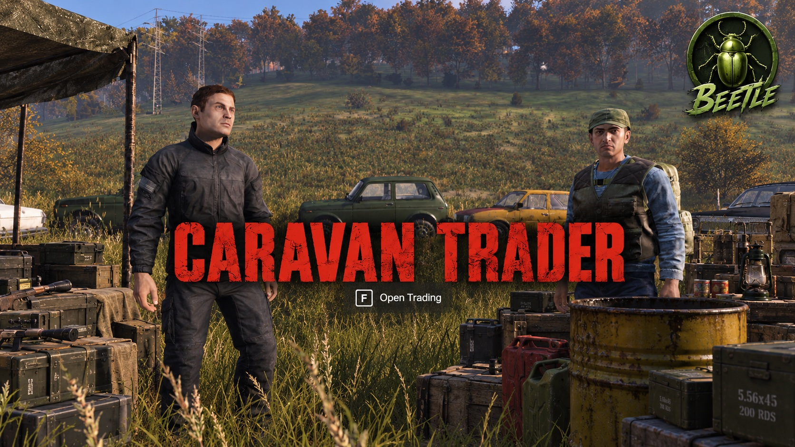
С чего начать
Where to start
Эта wiki теперь открывается сразу со страницы Старт. Сначала делается один файл с вашим SteamID64, потом почти вся настройка уже идёт через TRB_AdminTool прямо в игре.
This wiki now opens directly on the Start page. First, set your SteamID64 in one file, then almost all normal setup is done in game through TRB_AdminTool.
Коротко
Short version
1. Один раз запустить сервер. 2. Вписать свой SteamID64 в admin.json. 3. Перезапустить сервер. 4. Выдать себе TRB_AdminTool и дальше работать уже из админки.
1. Start the server once. 2. Put your SteamID64 into admin.json. 3. Restart the server. 4. Give yourself TRB_AdminTool and do the rest from the admin menu.
Что делать после входа
What to do after access
Обычный первый путь такой: Создать трейдера здесь или Создать бродячего трейдера, потом открыть Управление трейдерами, выбрать NPC и уже там настроить Общие, Категории, товары, цены и валюту.
A normal first workflow is: Create trader here or Create wandering trader, then open Manage traders, select the NPC and configure General, Categories, items, prices and currency there.
1
Установите CF, Dabs Framework и Caravan Trader Beetle, затем один раз запустите сервер, чтобы мод создал свои файлы профиля.
Install CF, Dabs Framework and Caravan Trader Beetle, then start the server once so the mod can generate its profile files.
2
Остановите сервер и откройте profile/Beetle/trader/config/admin.json.
Stop the server and open profile/Beetle/trader/config/admin.json.
3
В поле PrimaryAdminSteamId впишите свой полный SteamID64 из 17 цифр. Не короткий профильный ID, а именно полный SteamID64.
Put your full 17 digit SteamID64 into PrimaryAdminSteamId. Use the full SteamID64, not a short profile ID.
4
При необходимости добавьте и другие SteamID64 в AdminSteamIds, но для первого запуска обычно достаточно только главного администратора.
If needed, add more SteamID64 values to AdminSteamIds, but for a first setup the primary administrator is usually enough.
5
Запустите сервер снова. Через VPP, COT или другую админку заспавните себе предмет TRB_AdminTool.
Start the server again. Spawn TRB_AdminTool for yourself using VPP, COT or another admin tool.
6
Возьмите TRB_AdminTool в руки и используйте действие открытия админки Trader Beetle.
Hold TRB_AdminTool in your hands and use the Trader Beetle admin action.
7
Дальше настройка уже идёт в игре: создаёте торговца, добавляете категории, товары, валюту и только потом проверяете всё обычным игроком.
After that, setup continues in game: create the trader, add categories, items and currency, then test everything as a normal player.
Главный постоянный администратор Trader Beetle. Именно этот SteamID получает полный доступ к настройкам.
The primary permanent Trader Beetle administrator. This SteamID receives full configuration access.
Практика: после первого запуска дополнительных администраторов уже удобнее добавлять через внутриигровое меню Доступ.
Practical use: after first setup, additional administrators are easier to add through the in-game Access menu.
AdminPassword
Необязательный пароль для временного входа в админку в текущей игровой сессии.
Optional password for temporary admin access during the current game session.
Практика: обычному серверу он не нужен, если все администраторы добавлены по SteamID64.
Practical use: a normal server usually does not need it when all administrators are configured by SteamID64.
Если TRB_AdminTool не открывает меню, почти всегда проблема в одном из трёх мест: редактировали не тот профиль сервера, SteamID64 неполный или сервер не был перезапущен после изменения файла.
If TRB_AdminTool does not open the menu, the cause is usually one of three things: the wrong server profile was edited, the SteamID64 is incomplete, or the server was not restarted after the file change.
Caravan Trader Beetle
Главное меню админки
Admin home
Все основные функции начинаются отсюда.
All main functions start here.
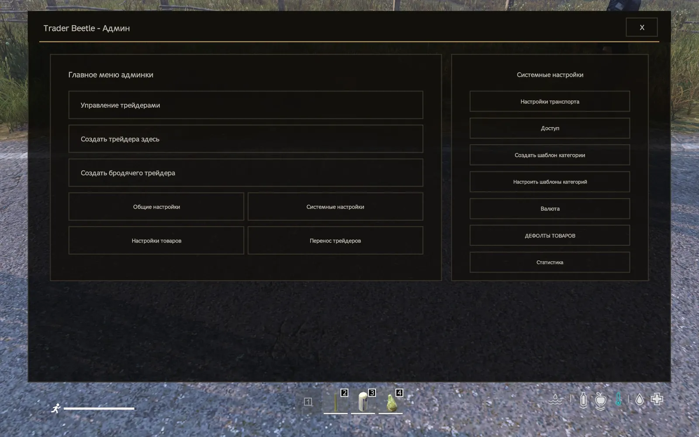
1
2
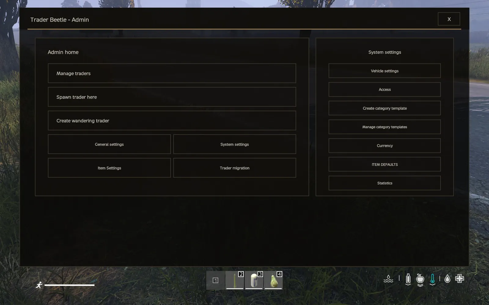
1
2
1
Главный блок создания и управления трейдерами.
Main trader creation and management block.
2
Блок серверных настроек, валюты, доступа и статистики.
Server settings, currency, access and statistics block.
Управление трейдерамиManage traders
Что делаетWhat it doesОткрывает список обычных статичных трейдеров. Отсюда можно открыть настройки, выключить или удалить выбранного NPC.Opens the static trader list. From here you can edit, deactivate or delete a selected NPC.
Создать трейдера здесьSpawn trader here
Что делаетWhat it doesБыстро создаёт обычного трейдера на позиции администратора. Удобно, когда место уже выбрано.Quickly creates a static trader at the administrator position. Useful when the location is already chosen.
Создать бродячего трейдераCreate wandering trader
Что делаетWhat it doesСоздаёт караванщика. У него есть обычный магазин плюс маршрут, остановки, расписание и поведение в пути.Creates a caravan trader. It has a normal shop plus route, stops, schedule and travelling behaviour.
Общие настройкиGeneral settings
Что делаетWhat it doesСерверные задержки запросов, корзина, кэш запросов и стандартные уведомления новых караванов.Server request cooldowns, cart, request cache and default notifications for new caravans.
Системные настройкиSystem settings
Что делаетWhat it doesЛоги и восстановление незавершённых операций после запуска сервера.Logging and recovery of recoverable pending operations after server startup.
Настройки товаровItem Settings
Что делаетWhat it doesГлобальные правила обратной продажи: состояние, еда, жидкости, оружие, cargo, модули, транспорт и лимиты.Global player-to-trader sale rules: condition, food, liquids, weapons, cargo, attachments, vehicles and limits.
Настройки транспортаVehicle settings
Что делаетWhat it doesГлобально включает торговлю транспортом и настраивает автоматический поиск безопасного места для выдачи купленной машины.Globally enables vehicle trading and configures automatic safe spawn search for purchased vehicles.
ВалютаCurrency
Что делаетWhat it doesВыбор готовой валюты или создание своей из предметов с разными номиналами.Select a preset currency or create a custom one from item classes and denominations.
ДоступAccess
Что делаетWhat it doesДополнительные постоянные администраторы и необязательный пароль временного доступа.Additional permanent administrators and optional temporary password access.
Дефолты товаровItem Defaults
Что делаетWhat it doesСтартовые значения склада, поставок и динамической цены, которые копируются только новым товарам.Starting stock, delivery and dynamic-price values copied only to newly created items.
СтатистикаStatistics
Что делаетWhat it doesЭкономическая сводка, сделки, товары, трейдеры и история административных действий.Economy summary, trades, items, traders and administrator action history.
Перенос трейдеровTrader migration
Что делаетWhat it doesОтдельный мастер переноса из поддерживаемых сторонних торговых систем. Для обычной новой установки этот раздел не нужен.Separate import wizard for supported third-party trader systems. A new installation normally does not need this page.
Caravan Trader Beetle
Управление созданными трейдерами
Managing existing traders
После создания трейдер всегда можно открыть, выключить, переставить или удалить.
After creation, a trader can always be edited, deactivated, moved or deleted.
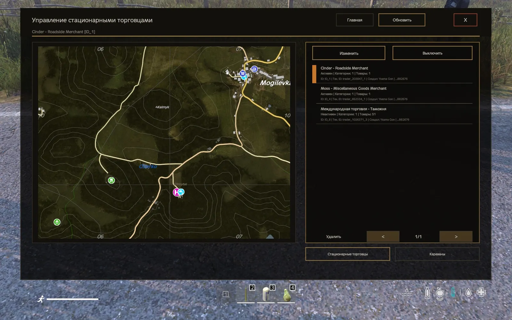
1
2
3
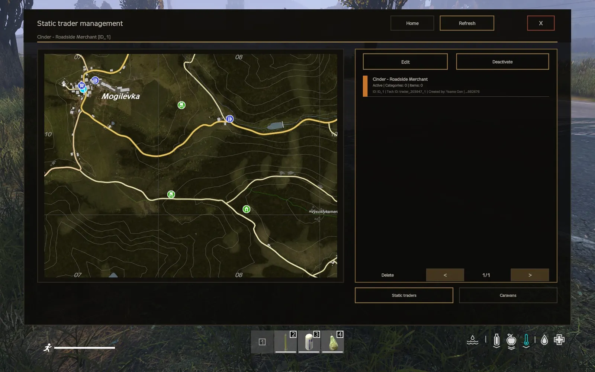
1
2
3
1
Карта расположения статичных трейдеров.
Static trader placement map.
2
Список трейдеров и верхние кнопки Изменить и Выключить.
Trader list with Edit and Deactivate at the top.
3
Нижние действия: удалить и переключение Статичные трейдеры / Караваны.
Bottom actions: delete and the Static traders / Caravans switch.
ИзменитьEdit
Что делаетWhat it doesОткрывает полные настройки выбранного трейдера: Общие, Категории, Доступ, Экипировка и Бродячий трейдер.Opens the selected trader full settings: General, Categories, Access, Loadout and Wandering trader.
На практикеIn practiceЭто основная кнопка для повседневной настройки уже созданного магазина.This is the main button for everyday editing of an existing shop.
ВыключитьDeactivate
Что делаетWhat it doesОставляет трейдера и все его настройки сохранёнными, но игроки не могут пользоваться магазином.Keeps the trader and all configuration saved, but players cannot use the shop.
На практикеIn practiceИспользуйте вместо удаления, если магазин нужно временно закрыть.Use this instead of deleting when a shop is temporarily closed.
УдалитьDelete
Что делаетWhat it doesПолностью удаляет выбранного трейдера.Completely removes the selected trader.
На практикеIn practiceПеред удалением убедитесь, что он точно больше не нужен. Для временного отключения используйте Выключить.Before deleting, make sure it is no longer needed. Use Deactivate for a temporary shutdown.
ОбновитьRefresh
Что делаетWhat it doesПовторно загружает актуальный список трейдеров.Reloads the current trader list.
Что делаетWhat it doesПереключает управление между обычными торговцами и передвижными караванщиками.Switches management between normal static traders and caravan traders.
Нормальный рабочий порядок после создания: Управление трейдерами → выбрать NPC → Изменить → настроить Общие → Категории → товары и цены → сохранить → проверить обычным игроком.A practical flow after creation: Manage traders → select NPC → Edit → configure General → Categories → items and prices → save → test as a normal player.
Caravan Trader Beetle
Создание обычного трейдера
Create a static trader
Выберите способ размещения, который подходит под вашу задачу.
Choose the placement method that fits your task.
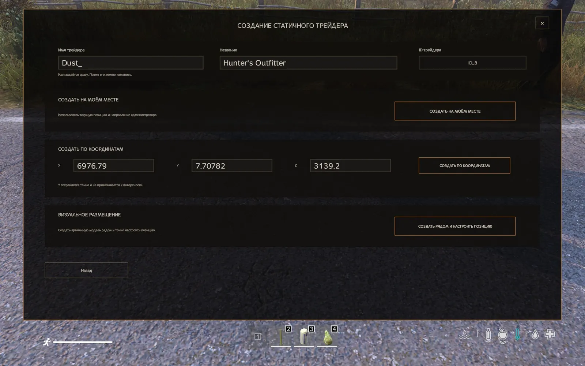
1
2
3
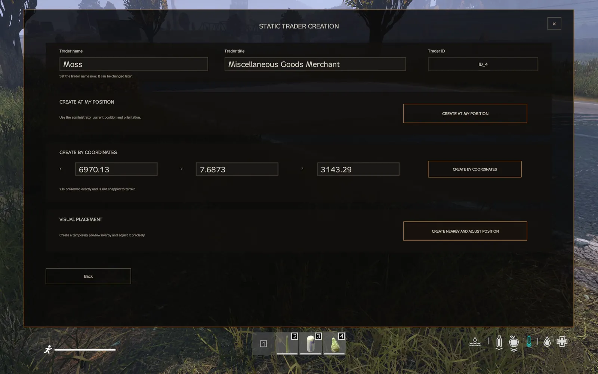
1
2
3
1
Создать на моём месте.Create at my position.
2
Создать по координатам.Create by coordinates.
3
Визуальное размещение.Visual placement.
Имя трейдераTrader name
Что делаетWhat it doesИмя NPC, которое потом можно изменить в его общих настройках.NPC name that can be changed later in General settings.
НазваниеTrader title
Что делаетWhat it doesДополнительное название или роль. Например Оружейник, Медик, Торговец припасами.Additional title or role, for example Gunsmith, Medic or Supply Merchant.
ID трейдераTrader ID
Что делаетWhat it doesСерверный идентификатор нового трейдера. Он резервируется сервером и нужен для внутренней привязки настроек.Server identifier reserved for the new trader and used to bind its configuration.
На практикеIn practiceОбычно его не нужно придумывать или менять вручную.Normally you do not need to invent or edit it manually.
Создать на моём местеCreate at my position
Что делаетWhat it doesБерёт текущую позицию и направление администратора.Uses the administrator current position and orientation.
На практикеIn practiceЭто лучший вариант для большинства случаев: встаньте туда, где должен стоять NPC, повернитесь в нужную сторону и нажмите кнопку.This is the easiest option for most cases: stand where the NPC should be, face the desired direction and press the button.
Создать по координатамCreate by coordinates
Что делаетWhat it doesСоздаёт трейдера по точным X, Y, Z. Высота Y сохраняется как введена и не подгоняется к земле.Creates the trader at exact X, Y, Z. The Y value is preserved and is not snapped to terrain.
На практикеIn practiceИспользуйте, если переносите точные координаты из редактора карты или уже знаете место.Use this when importing exact coordinates from a map editor or a known location.
Визуальное размещениеVisual placement
Что делаетWhat it doesОткрывает временную модель NPC рядом с вами, которую можно точно перемещать и поворачивать перед созданием.Opens a temporary NPC preview nearby that can be moved and rotated precisely before creation.
На практикеIn practiceУдобно рядом со стойкой, дверью или в тесном помещении, где несколько сантиметров имеют значение.Useful near counters, doors or tight interiors where precise placement matters.
Управление визуальным размещениемVisual placement controls
Что делаетWhat it doesW/S/A/D двигают модель, Q/Z меняют высоту, стрелки поворачивают, ПКМ даёт обзор вокруг, колесо меняет масштаб камеры.W/S/A/D move the preview, Q/Z change height, arrow keys rotate it, RMB orbits the view and the wheel changes camera zoom.
На практикеIn practiceУдерживайте клавишу для плавной точной подгонки.Hold a key for continuous precise adjustment.
После создания сразу откройте Управление трейдерами, выберите нового NPC и настройте его Общие, Категории и цены. Сам факт появления NPC ещё не делает полноценный магазин.After creation, open Manage traders, select the new NPC and configure General, Categories and prices. Spawning the NPC alone does not create a complete shop.
Caravan Trader Beetle
Общие настройки конкретного трейдера
Trader general settings
Имя, внешний вид, положение, интерфейс и точка выдачи транспорта.
Name, appearance, position, interface and vehicle delivery point.
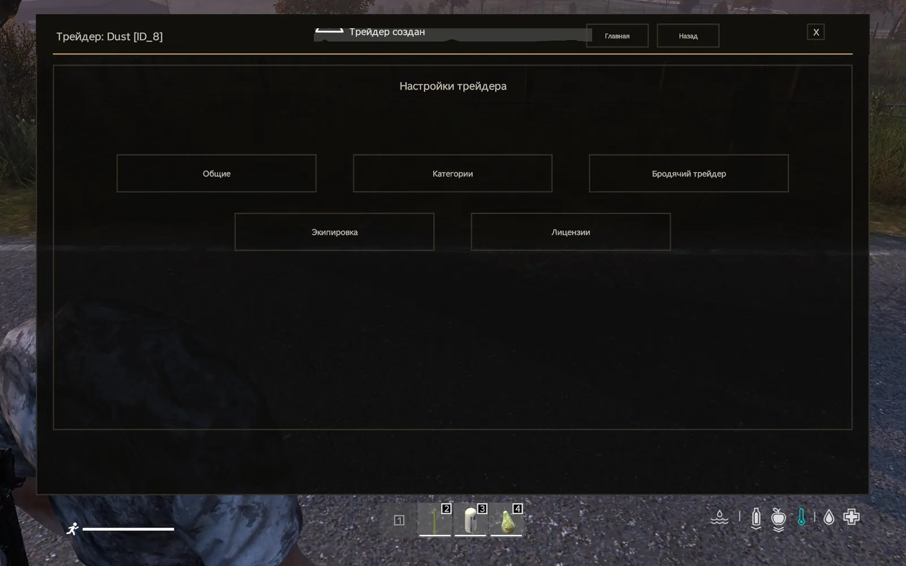
1
2
3
4
5
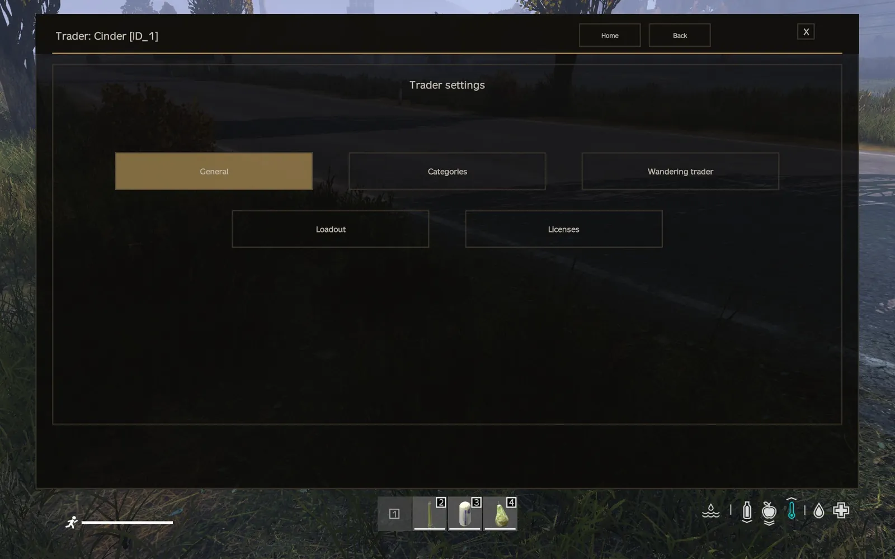
1
2
3
4
5
1
Общие настройки трейдера.
General trader settings.
2
Категории магазина.
Shop categories.
3
Настройки бродячего трейдера.
Wandering trader settings.
4
Экипировка и внешний вид NPC.
NPC loadout and appearance.
5
Доступ по SteamID64, список разрешённых игроков.
SteamID64 access and allowed-player list.
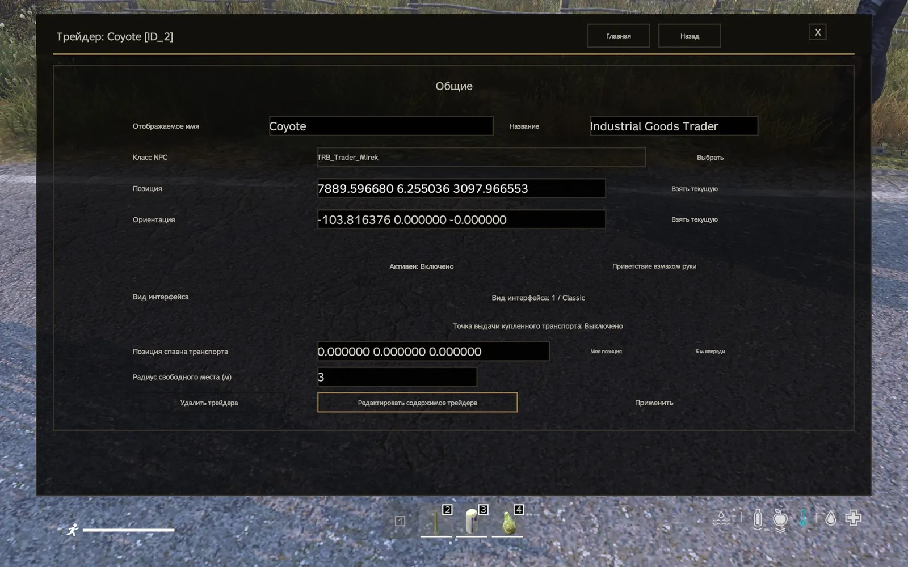
1
2
3
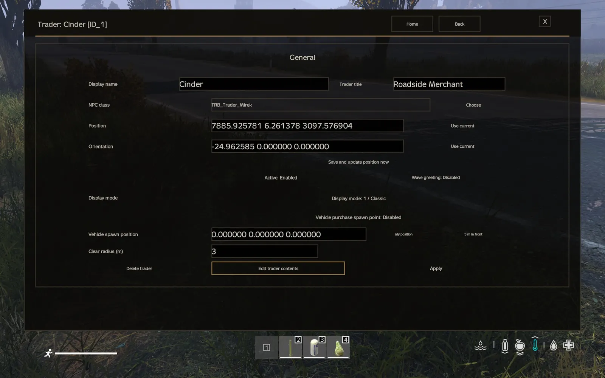
1
2
3
1
Имя, название и выбор тела NPC.Name, title and NPC body.
2
Позиция, направление, активность и вид интерфейса.Position, orientation, active state and UI style.
3
Точная точка выдачи купленного транспорта.Exact purchased-vehicle spawn point.
Отображаемое имяDisplay name
Что делаетWhat it doesОсновное имя торговца, которое видит игрок.Main trader name shown to players.
НазваниеTrader title
Что делаетWhat it doesДополнительная строка с ролью или специализацией.Additional role or specialization line.
Класс NPCNPC class
Что делаетWhat it doesВыбирает тело Trader Beetle NPC. Используйте кнопку Выбрать, а не случайный Survivor classname.Selects a compatible Trader Beetle NPC body. Use Choose instead of entering an arbitrary Survivor classname.
ПозицияPosition
Что делаетWhat it doesТочные координаты трейдера.Exact trader coordinates.
На практикеIn practiceКнопка Взять текущую копирует текущую позицию администратора.Use current copies the administrator current position.
ОриентацияOrientation
Что делаетWhat it doesНаправление, в котором смотрит NPC.Direction the NPC faces.
На практикеIn practiceМожно взять текущее направление администратора и затем сохранить.You can copy the administrator current orientation and save it.
Сохранить и обновить позицию сейчасSave and update position now
Что делаетWhat it doesСохраняет текущие координаты и ориентацию и сразу переставляет уже существующего NPC.Saves the current position and orientation and immediately moves the existing NPC.
На практикеIn practiceПолезно после точной правки позиции, чтобы сразу увидеть результат.Useful after precise position edits so you can verify the result immediately.
АктивенActive
Что делаетWhat it doesОпределяет, может ли игрок пользоваться этим трейдером.Controls whether players can use this trader.
На практикеIn practiceЕсли нужно временно закрыть магазин, выключите трейдера вместо удаления.For a temporary shutdown, deactivate the trader instead of deleting it.
Вид интерфейсаDisplay mode
Что делаетWhat it doesВыбирает визуальный стиль торгового окна. Логика торговли не меняется.Selects the visual style of the trade window. Trading logic does not change.
Приветствие взмахом рукиWave greeting
Что делаетWhat it doesСтатичный NPC может повернуться к ближайшему игроку и поприветствовать его.A static NPC can turn toward a nearby player and wave.
Точка выдачи купленного транспортаVehicle purchase spawn point
Что делаетWhat it doesЕсли включена, купленная машина появляется в этой точке, а не в автоматически найденном месте рядом.When enabled, purchased vehicles spawn at this exact point instead of an automatically found nearby location.
На практикеIn practiceИспользуйте на специально подготовленной парковке. Если точка занята или небезопасна, покупка отменяется и деньги не списываются.Use a prepared parking area. If the point is blocked or unsafe, the purchase is cancelled and money is not charged.
Позиция спавна транспортаVehicle spawn position
Что делаетWhat it doesТочные координаты точки выдачи купленной машины.Exact coordinates of the purchased-vehicle delivery point.
Моя позицияMy position
Что делаетWhat it doesКопирует текущую позицию администратора в точку выдачи.Copies the administrator current position into the vehicle delivery point.
5 м впереди5 m in front
Что делаетWhat it doesСтавит точку примерно в пяти метрах перед администратором. Удобно, когда вы стоите у трейдера лицом к парковке.Places the point about five metres in front of the administrator. Useful when standing at the trader and facing the parking area.
Радиус свободного местаClear radius
Что делаетWhat it doesТребуемое свободное пространство вокруг точной точки выдачи.Required free space around the exact vehicle spawn point.
На практикеIn practiceДля крупного транспорта радиус можно увеличить, но слишком большой радиус сложнее удовлетворить.Increase it for large vehicles, but very large values make a valid point harder to satisfy.
Что делаетWhat it doesПереходит к категориям и товарам этого трейдера.Opens the trader categories and items.
Удалить трейдераDelete trader
Что делаетWhat it doesПолностью удаляет выбранного трейдера. Для временного закрытия лучше использовать выключение активности.Permanently deletes the trader. Use deactivation instead for a temporary closure.
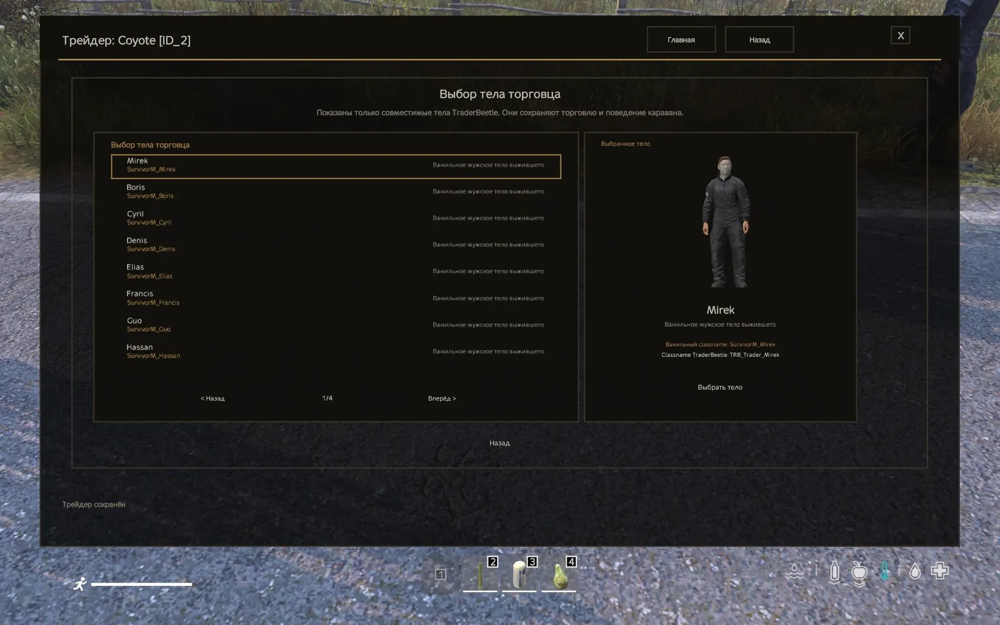
1
2
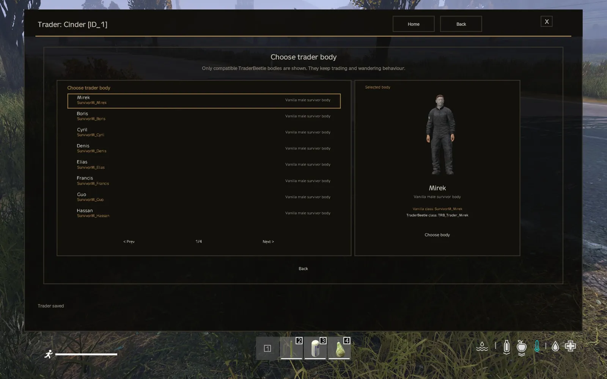
1
2
1
Список совместимых тел.Compatible body list.
2
Предпросмотр выбранного тела.Selected body preview.
Caravan Trader Beetle
Экипировка и внешний вид NPC
NPC loadout and appearance
Одежда торговца, предмет в руках и повторно используемые комплекты.
Trader clothing, hand item and reusable equipment sets.
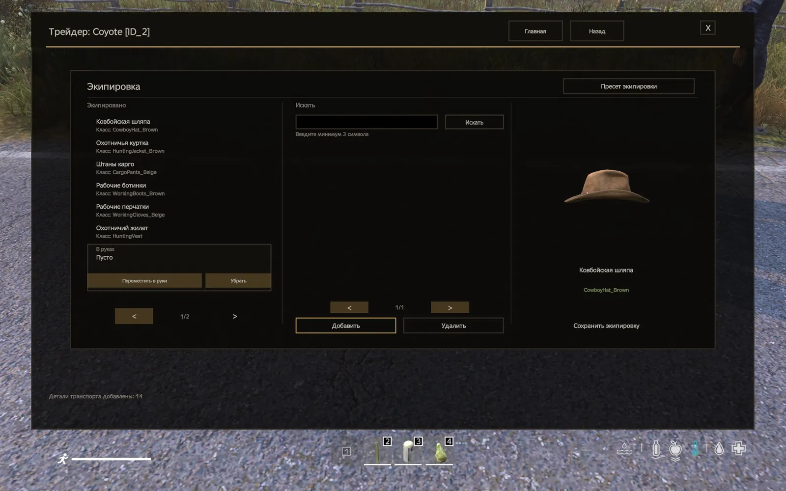
1
2
3
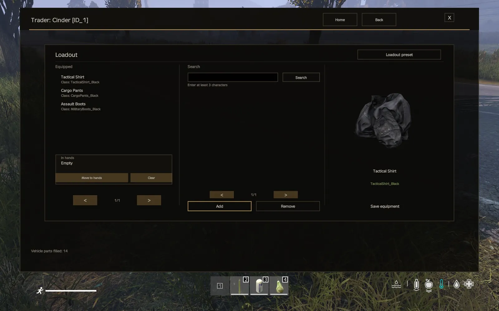
1
2
3
1
Уже надетая экипировка и предмет в руках.
Currently equipped loadout and hand item.
2
Поиск и список доступных предметов для добавления.
Search and list of available items to add.
3
Предпросмотр выбранного предмета.
Preview of the selected item.
ЭкипированоEquipped
Что делаетWhat it doesПоказывает предметы, которые сейчас надеты или установлены на NPC.Shows items currently worn or attached to the NPC.
ПоискSearch
Что делаетWhat it doesИщет совместимую одежду, оружие и экипировку по названию или classname.Searches compatible clothing, weapons and equipment by name or classname.
ДобавитьAdd
Что делаетWhat it doesДобавляет найденный предмет в экипировку NPC.Adds the selected item to the NPC loadout.
В рукахIn hands
Что делаетWhat it doesОтдельно задаёт предмет, который торговец держит в руках.Separately defines the item held in the trader hands.
Переместить в рукиMove to hands
Что делаетWhat it doesНазначает выбранный предмет как предмет в руках NPC.Assigns the selected item as the NPC hand item.
Сохранить экипировкуSave equipment
Что делаетWhat it doesПрименяет текущий набор к трейдеру.Applies the current equipment set to the trader.
Пресет экипировкиLoadout preset
Что делаетWhat it doesПозволяет повторно использовать один и тот же комплект одежды у нескольких трейдеров.Lets you reuse the same equipment set across several traders.
Создать пресетCreate preset
Что делаетWhat it doesСохраняет текущий комплект как новый повторно используемый пресет.Saves the current set as a reusable preset.
Изменить пресетEdit preset
Что делаетWhat it doesОткрывает существующий пресет для изменения.Opens an existing preset for editing.
Экипировка NPC и товары магазина не связаны. Если торговец держит M4A1 или носит куртку, эти предметы не начинают автоматически продаваться в магазине. Ассортимент настраивается только через Категории и Товары.NPC equipment and shop inventory are separate. A weapon held by the trader or clothing worn by the NPC does not automatically become a shop item. Shop inventory is configured only through Categories and Items.
Caravan Trader Beetle
Категории и структура магазина
Categories and shop structure
Категория это раздел магазина. Внутри неё лежат товары.
A category is a shop section containing items.
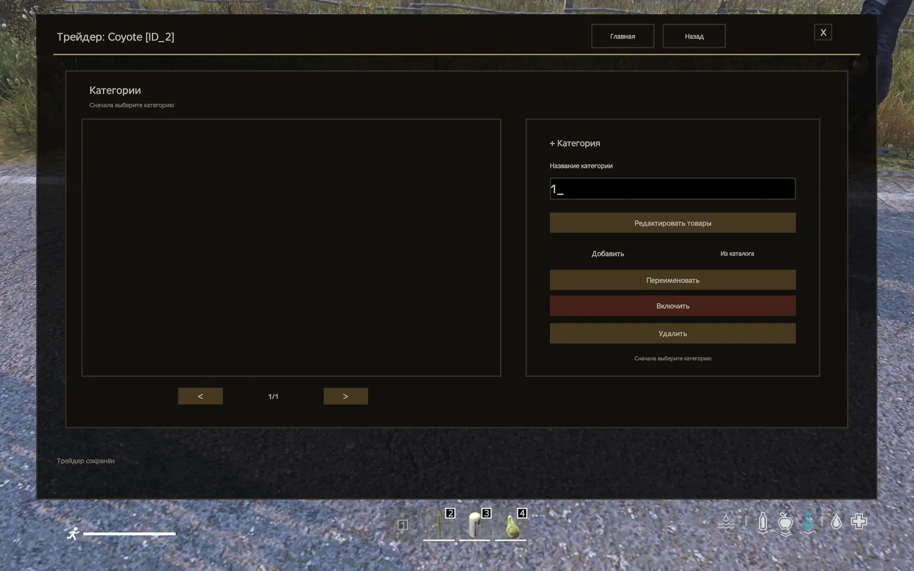
1
2
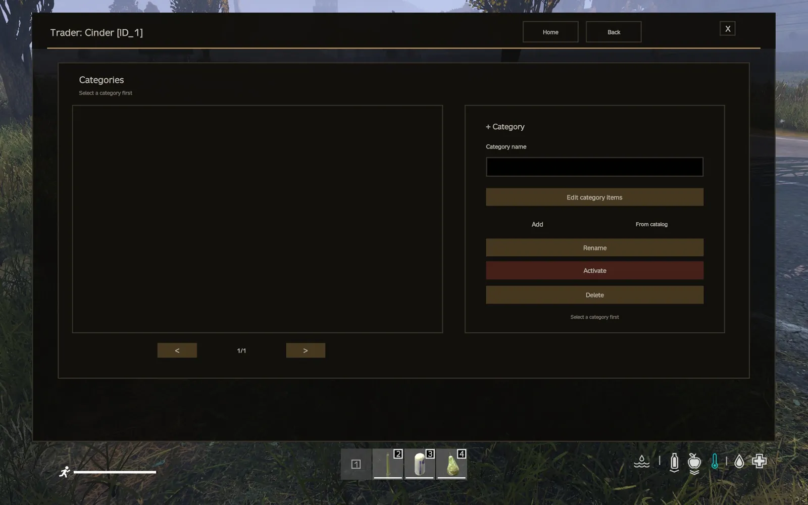
1
2
1
Список категорий выбранного трейдера.
Category list for the selected trader.
2
Создание и действия с выбранной категорией.
Creation and actions for the selected category.
+ Категория+ Category
Что делаетWhat it doesСоздаёт новую пустую категорию.Creates a new empty category.
На практикеIn practiceСначала дайте ей понятное имя, затем откройте Редактировать товары.Give it a clear name, then open Edit category items.
Название категорииCategory name
Что делаетWhat it doesНазвание раздела, которое увидит игрок.Section name shown to the player.
На практикеIn practiceНапример Оружие, Еда, Медицина, Транспорт.For example Weapons, Food, Medicine or Vehicles.
Редактировать товарыEdit category items
Что делаетWhat it doesОткрывает список товаров выбранной категории.Opens the selected category item list.
Из каталогаFrom catalog
Что делаетWhat it doesПозволяет добавить готовую категорию из другого Trader Beetle трейдера или сохранённого шаблона.Adds a ready category from another Trader Beetle trader or saved template.
На практикеIn practiceПолезно, если несколько магазинов продают одинаковую медицину или припасы.Useful when several shops share the same medicine or supplies.
Включить / выключитьActivate / deactivate
Что делаетWhat it doesСкрывает категорию от игроков без удаления её настроек.Hides the category from players without deleting its configuration.
ПереименоватьRename
Что делаетWhat it doesМеняет отображаемое имя категории.Changes the displayed category name.
УдалитьDelete
Что делаетWhat it doesПолностью удаляет категорию у этого трейдера.Removes the category from this trader.
Каталог категорийCategory Catalog
Каталог нужен, когда вы уже один раз хорошо настроили категорию и не хотите повторять ту же работу у каждого нового торговца. В каталоге можно найти категорию другого Trader Beetle трейдера или сохранённый шаблон, открыть её, проверить состав и добавить копию выбранному трейдеру.The Category Catalog is useful after you have configured a category once and do not want to rebuild it for every new trader. It can reuse a category from another Trader Beetle trader or a saved template, let you review its contents, and add a copy to the selected trader.
Создать шаблон категорииCreate category template
Что делаетWhat it doesСохраняет повторно используемый шаблон категории.Saves a reusable category template.
На практикеIn practiceИспользуйте для одинаковых наборов вроде Медицина, Стройка или Боеприпасы.Use it for repeated sets such as Medicine, Building or Ammunition.
Добавить к трейдеруAdd to trader
Что делаетWhat it doesКопирует выбранную категорию или шаблон в текущего трейдера.Copies the selected category or template into the current trader.
На практикеIn practiceПосле копирования откройте категорию и проверьте цены и товары, если у разных магазинов должна быть разная экономика.After copying, review the category if different shops need different prices or inventory.
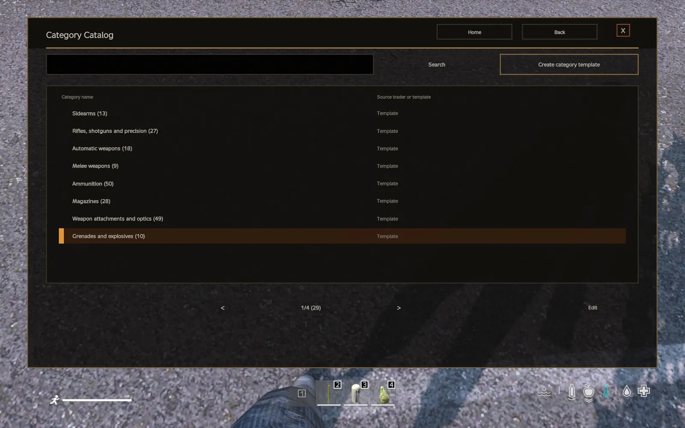
1
1
Каталог готовых категорий и шаблонов.Catalog of reusable categories and templates.
Caravan Trader Beetle
Добавление товара в магазин
Adding items
Поиск для точной настройки, Быстрое добавление для массовой работы.
Search for precise setup, Quick Add for bulk work.
Быстрое добавление удобно для первичного наполнения магазина. Оно задаёт базовые цены, направления торговли и простой лимит склада. Полный редактор товара нужен после добавления, когда вы хотите настроить поставки, динамическую цену, количество, жидкость, модули или комплект транспорта.Quick Add is best for filling a shop quickly. It sets basic prices, trade directions and a simple stock limit. The full editor is used after the item is added when you need deliveries, dynamic pricing, quantity, liquids, attachments or a vehicle kit.
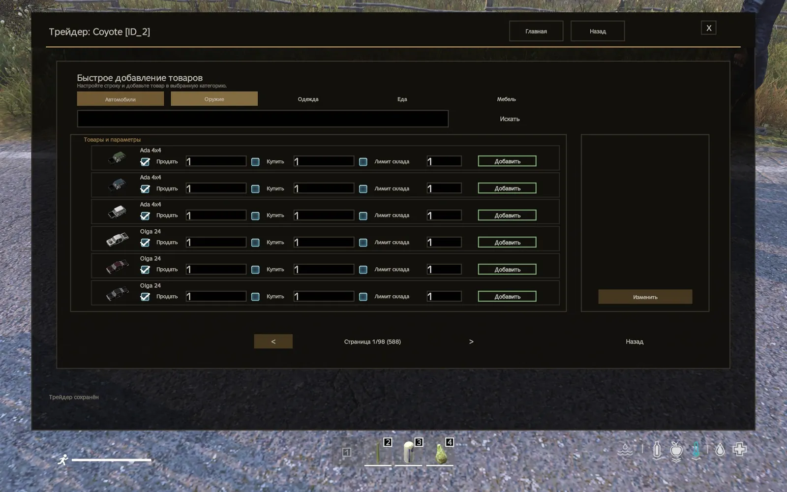
1
2
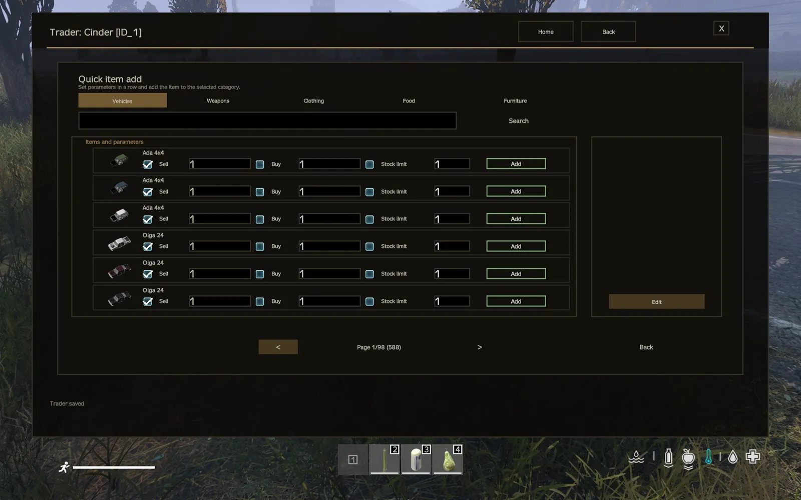
1
2
1
Быстрое добавление товаров, цены, направления торговли и лимит.
Quick Add item rows, prices, trade directions and stock limit.
2
Правая панель просмотра и перехода к полному редактору.
Right-side preview panel and shortcut to the full editor.
Поиск товаровItem search
Что делаетWhat it doesИщет реальные предметы, доступные в runtime сервера.Searches real item classes available in the current server runtime.
На практикеIn practiceДля точного поиска достаточно части названия или classname.Use part of the display name or classname.
Показывать товары с отсутствующим ClassNameShow missing items
Что делаетWhat it doesПоказывает сохранённые или импортированные записи, чей classname сейчас не найден среди загруженных модов.Shows saved or imported entries whose classname is not currently available from loaded mods.
На практикеIn practiceЭто полезно для диагностики после удаления или замены стороннего мода.Useful when diagnosing entries after removing or replacing another mod.
Цена продажиSell price
Что делаетWhat it doesЦена, которую платит игрок при покупке предмета у трейдера.Price paid by the player when buying from the trader.
Цена скупкиBuy price
Что делаетWhat it doesСумма, которую трейдер платит игроку за этот предмет.Amount the trader pays the player for the item.
ПродаватьSell
Что делаетWhat it doesРазрешает трейдеру продавать предмет игрокам.Allows the trader to sell the item to players.
ПокупатьBuy
Что делаетWhat it doesРазрешает трейдеру покупать предмет у игроков.Allows the trader to buy the item from players.
Лимит складаStock limit
Что делаетWhat it doesБыстро задаёт конечный запас. Для подробной экономики потом откройте редактор товара и Экономика.Quickly sets finite stock. Use the item Economy page for detailed stock behaviour.
Главная путаница в названиях цен: Цена продажи это цена магазина для игрока. Цена скупки это выплата игроку. Если M4A1 продаётся за 1000 и скупается за 600, игрок покупает за 1000 и продаёт обратно за 600.The main price naming trap: Sell price is the shop price paid by the player. Buy price is the payout to the player. If an M4A1 sells for 1000 and buys for 600, the player buys it for 1000 and sells it back for 600.
Caravan Trader Beetle
Редактор конкретного товара
Single item editor
Здесь настраивается одна торговая позиция после её добавления.
This page configures one item after it has been added.
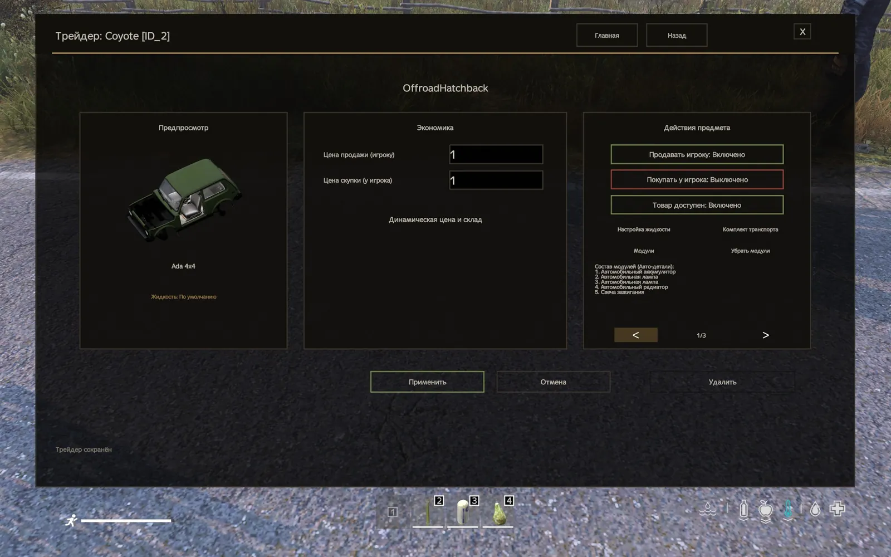
1
2
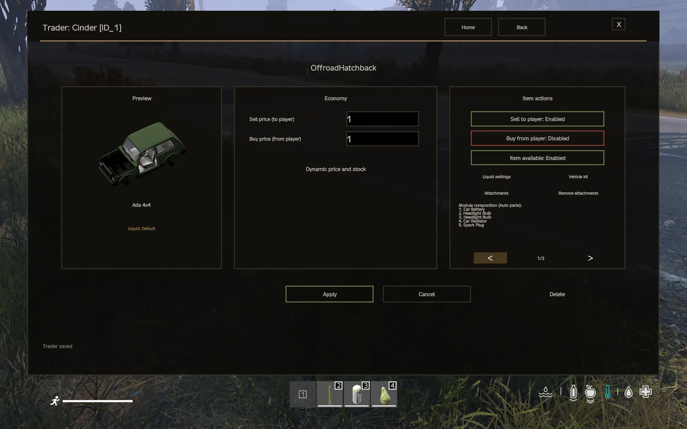
1
2
1
Экономика товара: цены и динамика.
Item economy: prices and dynamic pricing.
2
Действия товара, жидкости, модули и комплект транспорта.
Item actions, liquids, modules and vehicle kit.
Цена продажи игрокуSell price to player
Что делаетWhat it doesБазовая цена покупки игроком. Динамическая цена может потом изменить фактическое значение.Base price for player purchases. Dynamic pricing may later change the actual current price.
Цена скупки у игрокаBuy price from player
Что делаетWhat it doesБазовая выплата игроку за продажу предмета. Глобальные правила состояния, количества и жидкости могут уменьшить итоговую выплату.Base payout when the player sells the item. Global condition, quantity and liquid rules can reduce the final payout.
Продавать игрокуSell to player
Что делаетWhat it doesВключает направление трейдер → игрок.Enables trader to player sales.
Покупать у игрокаBuy from player
Что делаетWhat it doesВключает направление игрок → трейдер.Enables player to trader sales.
Товар доступенItem available
Что делаетWhat it doesВременно скрывает товар из магазина без удаления его настроек.Temporarily hides the item without deleting its configuration.
ЭкономикаEconomy
Что делаетWhat it doesОткрывает отдельное окно склада, автоматических поставок и динамической цены.Opens stock, automatic deliveries and dynamic pricing.
Настройка жидкостиLiquid settings
Что делаетWhat it doesОпределяет количество и тип жидкости у продаваемой трейдером ёмкости.Defines liquid amount and type for containers sold by the trader.
МодулиAttachments
Что делаетWhat it doesНастраивает прямые модули предмета, например оптику или другие attachment slots.Configures direct item attachments such as optics and other attachment slots.
Комплект транспортаVehicle kit
Что делаетWhat it doesНастраивает детали, с которыми будет создан купленный транспорт.Configures parts installed on a purchased vehicle.
КоличествоQuantity
Что делаетWhat it doesДля стакаемых или количественных предметов задаёт создаваемое количество. -1 оставляет стандартное значение класса.For quantity based items, controls the spawned amount. -1 keeps the class default.
Убрать модулиRemove attachments
Что делаетWhat it doesОчищает настроенный комплект прямых модулей у этой торговой позиции.Clears the configured direct attachment set for this item entry.
ПрименитьApply
Что делаетWhat it doesСохраняет изменения этого товара и возвращает в предыдущий экран.Saves changes to this item and returns to the previous screen.
УдалитьDelete
Что делаетWhat it doesУдаляет эту торговую позицию из выбранной категории.Removes this trader item entry from the selected category.
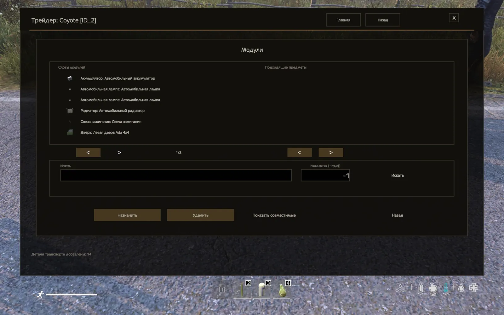
1
2
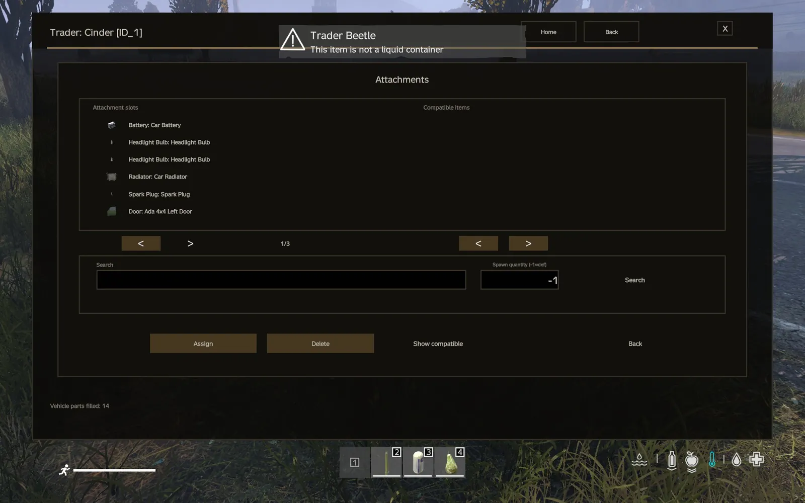
1
2
1
Слоты модулей выбранного предмета.Attachment slots of the selected item.
2
Совместимые предметы для выбранного слота.Compatible items for the selected slot.
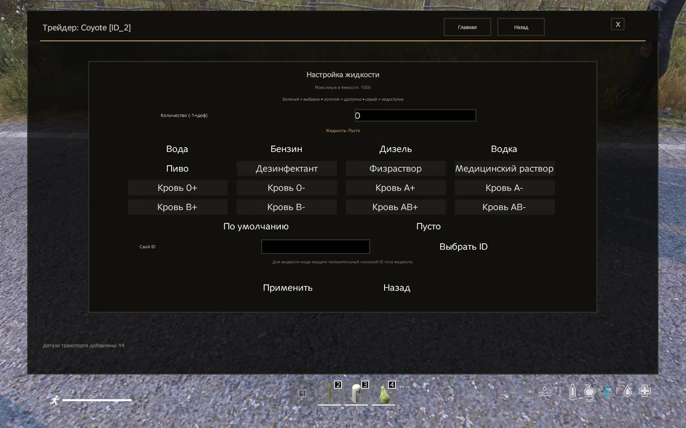
1
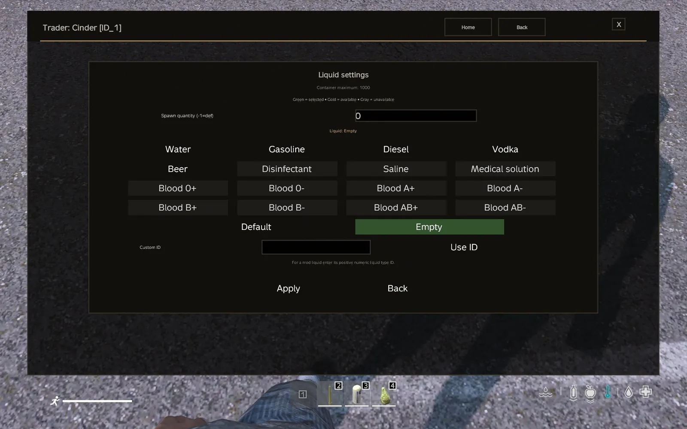
1
1
Количество и тип жидкости.Liquid amount and type.
Caravan Trader Beetle
Склад, поставки и динамическая цена
Stock, deliveries and dynamic price
Как сделать бесконечный товар, дефицит или живую цену.
How to create unlimited stock, scarcity or changing prices.
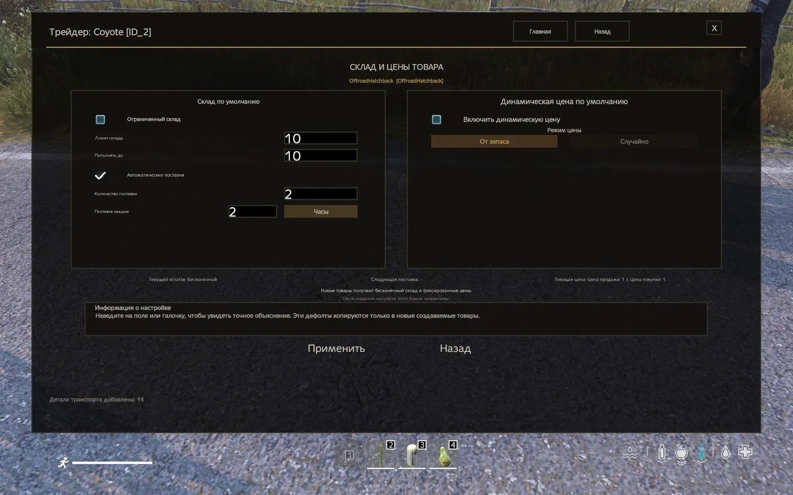
1
2
1
Склад и автоматические поставки.Stock and automatic deliveries.
2
Динамическая цена.Dynamic pricing.
Ограниченный складLimited stock
Что делаетWhat it doesВключает учёт реального остатка. Если выключено, товар считается бесконечным.Enables actual stock tracking. When disabled, stock is unlimited.
На практикеIn practiceДля простого магазина оставьте выключенным.For a simple shop, leave it off.
ПримерExampleЛимит 10: после продажи 10 единиц товар закончится, пока его не пополнят.Capacity 10: after 10 units are sold, the item is out of stock until replenished.
Лимит складаStock capacity
Что делаетWhat it doesМаксимальное количество товара на складе. Для режима цены От запаса это также точка полного склада.Maximum stock. In By stock pricing this is also the full-stock reference point.
Пополнять доFill up to
Что делаетWhat it doesЦелевой остаток для автоматических поставок. Поставки идут только пока запас ниже этого значения.Target stock for automatic deliveries. Deliveries occur only while stock is below this value.
На практикеIn practiceЭто не максимум склада и не влияет напрямую на точку полной цены.This is not the warehouse capacity and does not define the full-price reference.
Автоматические поставкиAutomatic deliveries
Что делаетWhat it doesВключает периодическое пополнение склада.Enables periodic stock replenishment.
Количество поставкиDelivery amount
Что делаетWhat it doesСколько единиц приходит за один цикл поставки.Units added by one delivery cycle.
ПримерExampleЛимит 20, Пополнять до 15, Поставка 3: если осталось 9, следующий цикл добавит 3 и станет 12.Capacity 20, Fill up to 15, Delivery 3: if stock is 9, the next cycle adds 3 and stock becomes 12.
Поставка каждыеDeliver every
Что делаетWhat it doesИнтервал автоматической поставки. Допустимый диапазон от 1 минуты до 7 дней.Automatic delivery interval. Accepted range is 1 minute to 7 days.
Догонять пропущенные поставки после простояCatch up missed deliveries after downtime
Что делаетWhat it doesПосле простоя сервера применяет пропущенные циклы поставок, пока склад не догонит расписание.After server downtime, applies missed delivery cycles until the stock schedule catches up.
На практикеIn practiceВыключите, если хотите считать только будущие поставки после запуска.Disable it if only future deliveries after startup should count.
Включить динамическую ценуEnable dynamic price
Что делаетWhat it doesРазрешает автоматически менять обе базовые цены товара. Если выключено, используются обычные Sell price и Buy price.Allows automatic adjustment of both base item prices. When disabled, normal Sell price and Buy price are used.
От запасаBy stock
Что делаетWhat it doesЦена растёт по мере уменьшения склада. При полном складе используются обычные цены, при нуле применяется полная заданная наценка.Price rises as stock falls. At full stock normal prices are used, at zero stock the full configured markup is applied.
ПримерExampleБазовая цена 1000, наценка при пустом складе 50%. Полный склад = 1000, пустой склад = до 1500.Base price 1000 with 50% empty-stock markup. Full stock = 1000, empty stock = up to 1500.
Наценка при пустом складе, %Empty-stock markup, %
Что делаетWhat it doesМаксимальная добавка при нулевом остатке. Между полным и пустым складом применяется соответствующая часть наценки.Maximum markup at zero stock. Between full and empty stock, a proportional part of the markup is used.
СлучайноRandom
Что делаетWhat it doesЦена не зависит от склада. Периодически выбирается процент от базовой цены в заданном диапазоне.Price does not depend on stock. A percentage of the base price is periodically selected within the configured range.
Нижняя / верхняя границаLower / upper bound
Что делаетWhat it doesПроцентный диапазон случайной цены. Один и тот же процент применяется к продаже и скупке, поэтому их исходное соотношение сохраняется.Random percentage range. The same percentage is applied to sell and buy prices, preserving their base ratio.
ПримерExampleДиапазон 80-120% и базовая цена 1000 дают случайную цену примерно от 800 до 1200.Range 80-120% with base price 1000 gives a random price roughly between 800 and 1200.
Пересчитывать каждыеRecalculate every
Что делаетWhat it doesКак часто выбирается новое случайное значение. Допустимо от 1 минуты до 7 дней.How often a new random value is chosen. Accepted range is 1 minute to 7 days.
Что делаетWhat it doesЗащищает разницу между ценой продажи и скупки при динамической цене. Значение 30 означает, что трейдер сохраняет минимум 30% маржи.Protects the sell versus buy relationship under dynamic pricing. A value of 30 keeps at least a 30% trader margin.
Текущий остатокCurrent stock
Что делаетWhat it doesПоказывает фактическое количество товара на складе прямо сейчас. Это информационное поле, а не отдельный лимит.Shows the actual current stock right now. This is runtime information, not another capacity setting.
Следующая поставкаNext delivery
Что делаетWhat it doesПоказывает, когда ожидается следующий цикл автоматической поставки для этого товара.Shows when the next automatic delivery cycle is expected for this item.
Текущая ценаCurrent price
Что делаетWhat it doesПоказывает фактическую рассчитанную цену с учётом выбранного динамического режима.Shows the actual calculated price after the selected dynamic pricing mode is applied.
Для первого запуска используйте бесконечный склад и фиксированные цены. Когда обычная покупка и продажа проверены, включайте склад и динамику по одному, чтобы сразу понимать, какая настройка изменила результат.For the first launch, use unlimited stock and fixed prices. Once normal buying and selling are verified, enable stock and dynamic pricing one step at a time so you can see what changed the result.
Caravan Trader Beetle
Дефолты новых товаров
New item defaults
Шаблон стартовых значений, который копируется только при создании новой позиции.
A template of starting values copied only when a new item entry is created.
Этот раздел не меняет уже существующие товары. Он только определяет, с какими начальными значениями будет открываться форма нового товара.This page does not change existing items. It only defines the starting values used when a new item entry is created.
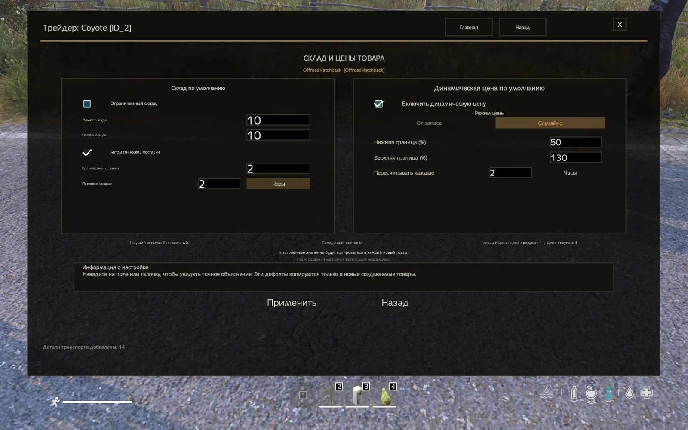
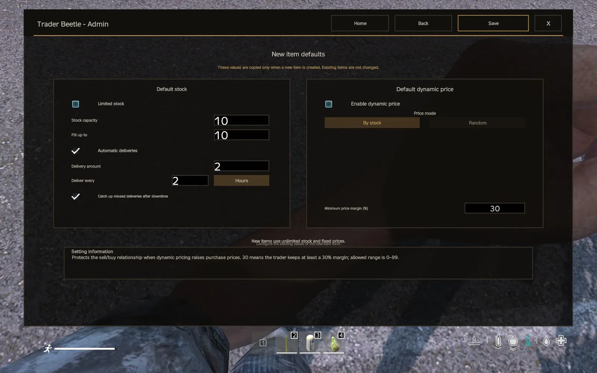
1
2
1
Дефолты склада и автоматических поставок.Default stock and automatic delivery values.
Что делаетWhat it doesОпределяет, будет ли новый товар сразу создаваться с конечным складом.Controls whether a newly created item starts with finite stock.
На практикеIn practiceЕсли большинство товаров на сервере бесконечные, оставьте выключенным.Leave it off if most server items use unlimited stock.
Лимит складаStock capacity
Что делаетWhat it doesСтартовый максимум склада для нового товара.Starting stock capacity for a new item.
Пополнять доFill up to
Что делаетWhat it doesСтартовая цель автопоставок для нового товара.Starting automatic-delivery target for a new item.
Автоматические поставкиAutomatic deliveries
Что делаетWhat it doesОпределяет, будет ли новый товар сразу получать автоматическое пополнение.Controls whether a new item starts with automatic deliveries enabled.
Количество поставкиDelivery amount
Что делаетWhat it doesСтартовое количество одной автоматической поставки.Starting units added by one delivery.
Поставка каждыеDeliver every
Что делаетWhat it doesСтартовый интервал между поставками.Starting interval between deliveries.
Догонять пропущенные поставки после простояCatch up missed deliveries after downtime
Что делаетWhat it doesОпределяет стартовое поведение нового товара после простоя сервера.Defines the new item default for missed delivery cycles after downtime.
Включить динамическую ценуEnable dynamic price
Что делаетWhat it doesОпределяет, будут ли новые товары сразу создаваться с динамической ценой.Controls whether newly created items start with dynamic pricing enabled.
Режим ценыPrice mode
Что делаетWhat it doesСтартовый режим: От запаса или Случайно.Starting mode: By stock or Random.
Наценка при пустом складе, %Empty-stock markup, %
Что делаетWhat it doesСтартовая максимальная наценка для режима От запаса.Starting maximum markup for By stock mode.
Нижняя / верхняя границаLower / upper bound
Что делаетWhat it doesСтартовый диапазон процентов для режима Случайно.Starting percentage range for Random mode.
Что делаетWhat it doesСтартовая защита разницы между продажей и скупкой.Starting protection for the sell versus buy price relationship.
Если вы изменили Дефолты товаров и старые позиции не поменялись, это правильно. Чтобы изменить уже созданный товар, откройте его Редактор товара → Экономика.If you change Item Defaults and old items do not change, that is expected. To change an existing item, open Item editor → Economy.
Caravan Trader Beetle
Глобальные правила продажи предметов
Global item sale rules
Эти настройки применяются, когда игрок продаёт предмет трейдеру.
These settings apply when a player sells an item to a trader.
Сервер проверяет реальный физический предмет перед оплатой. Эти правила глобальные: они не меняют то, что трейдер продаёт игроку, а определяют, что он готов принять обратно и сколько за это заплатит.The server validates the real physical item before payout. These are global player-to-trader sale rules. They do not change what the trader sells to players.
Качество и состояниеQuality and condition
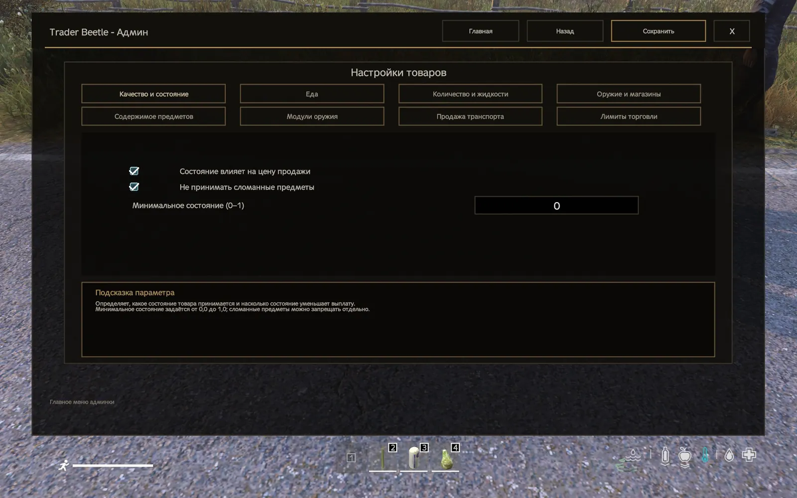
1
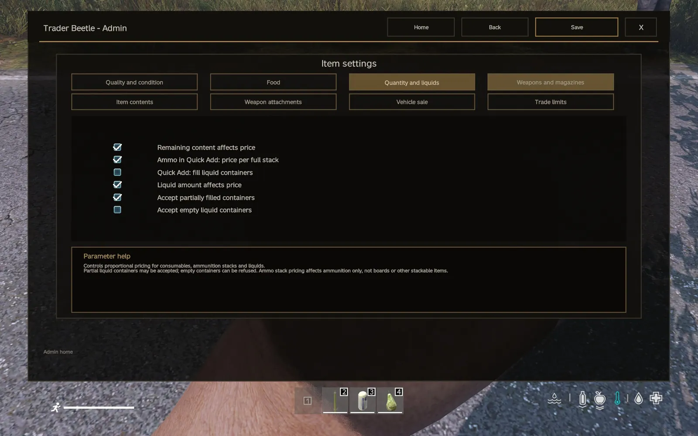
1
1
Параметры состояния предмета.Item condition rules.
Состояние влияет на цену продажиCondition affects sell price
Что делаетWhat it doesУмножает выплату на состояние предмета. Повреждённая вещь стоит дешевле.Multiplies payout by item condition. Damaged items pay less.
ПримерExampleПредмет с 50% здоровья даст примерно 50% базовой выплаты до других поправок.An item at 50% condition pays roughly 50% of its base payout before other adjustments.
Не принимать сломанные предметыDo not accept ruined items
Что делаетWhat it doesПолностью запрещает продажу Ruined предметов.Completely rejects ruined items.
Минимальное состояние (0-1)Minimum condition (0-1)
Что делаетWhat it doesЗадаёт порог приёма даже для ещё не Ruined предметов.Sets an acceptance threshold even for items that are not yet ruined.
ПримерExample0.25 означает, что предмет ниже 25% состояния не принимается.0.25 means items below 25% condition are rejected.
ЕдаFood
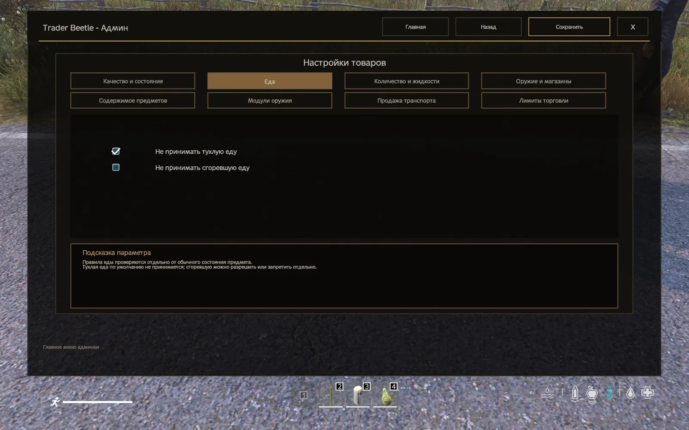
1
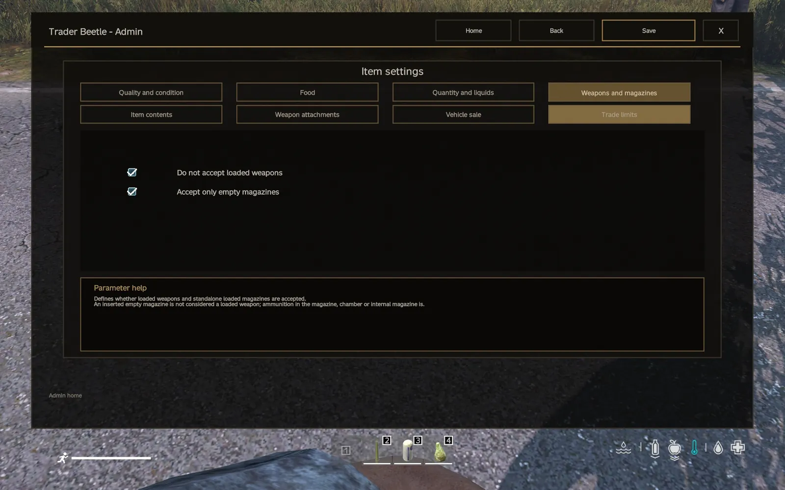
1
1
Отдельные запреты для тухлой и сгоревшей еды.Separate rules for rotten and burned food.
Не принимать тухлую едуDo not accept rotten food
Что делаетWhat it doesТухлая еда отклоняется независимо от состояния и количества.Rotten food is rejected regardless of condition and quantity.
Не принимать сгоревшую едуDo not accept burned food
Что делаетWhat it doesОтдельно запрещает сгоревшую еду.Separately rejects burned food.
Количество и жидкостиQuantity and liquids
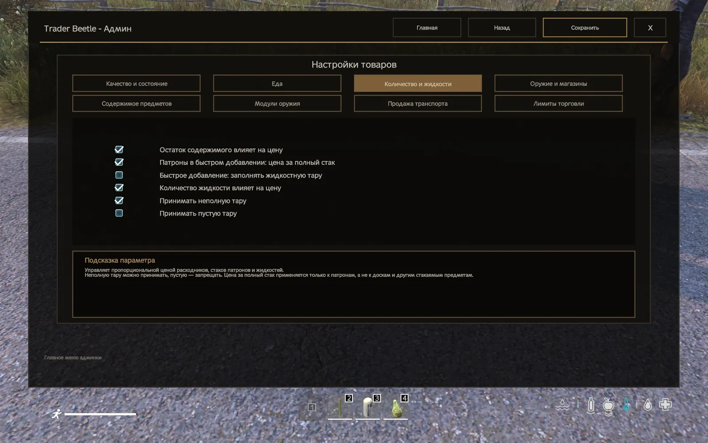
1
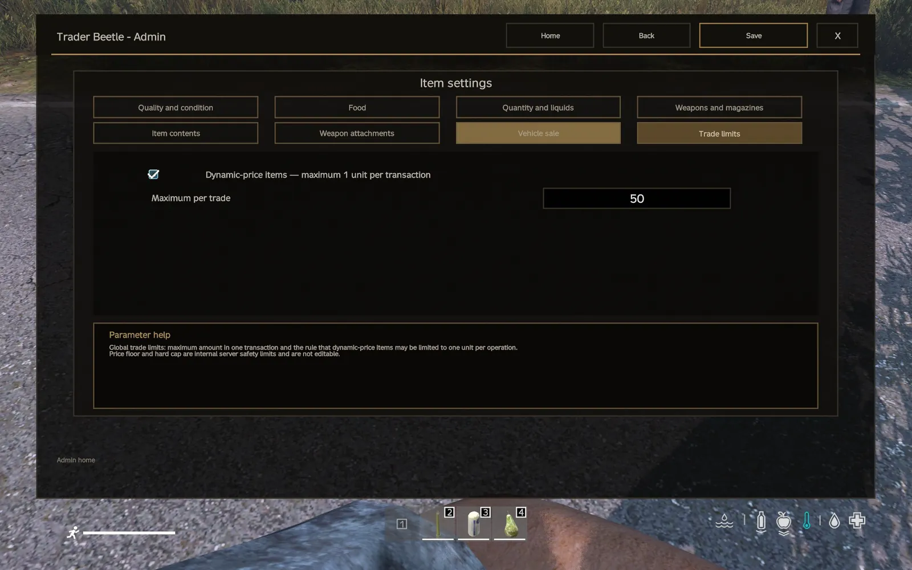
1
1
Количество, патроны и правила жидкостей.Quantity, ammunition and liquid rules.
Остаток содержимого влияет на ценуRemaining content affects price
Что делаетWhat it doesДля одиночных расходников уменьшает выплату пропорционально оставшемуся количеству.For single consumables, reduces payout proportionally to remaining usable quantity.
Патроны в быстром добавлении: цена за полный стакAmmo in Quick Add: price per full stack
Что делаетWhat it doesВКЛ означает, что введённая цена относится к полному ванильному стаку патронов, а неполный стак оплачивается пропорционально. ВЫКЛ означает цену за один патрон.ON means the entered price is for a full vanilla ammo stack and partial stacks pay proportionally. OFF means price per round.
Быстрое добавление: заполнять жидкостную таруQuick Add: fill liquid containers
Что делаетWhat it doesОпределяет, будут ли новые жидкостные контейнеры из Quick Add создаваться заполненными стандартной жидкостью или явным пустым вариантом.Controls whether new liquid containers from Quick Add start full with their default liquid or explicitly empty.
Количество жидкости влияет на ценуLiquid amount affects price
Что делаетWhat it doesУмножает выплату на текущий объём / максимальный объём.Multiplies payout by current liquid amount divided by container capacity.
ПримерExample400 мл в таре на 1000 мл дают 40% базовой выплаты до поправки на состояние.400 ml in a 1000 ml container pays 40% of base payout before condition scaling.
Принимать неполную таруAccept partially filled containers
Что делаетWhat it doesРазрешает продавать контейнеры, которые заполнены не полностью.Allows partially filled liquid containers to be sold.
Принимать пустую таруAccept empty liquid containers
Что делаетWhat it doesРазрешает продажу ёмкости с 0 мл. Если выключено, пустая тара отклоняется до расчёта цены.Allows 0 ml containers. When disabled, empty containers are rejected before price calculation.
Оружие и магазиныWeapons and magazines
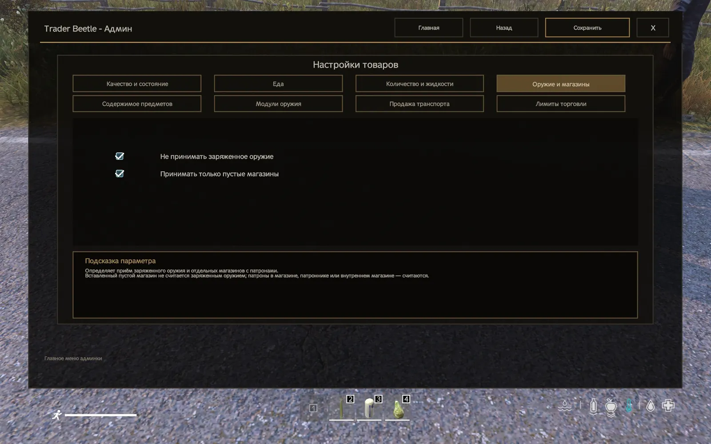
1
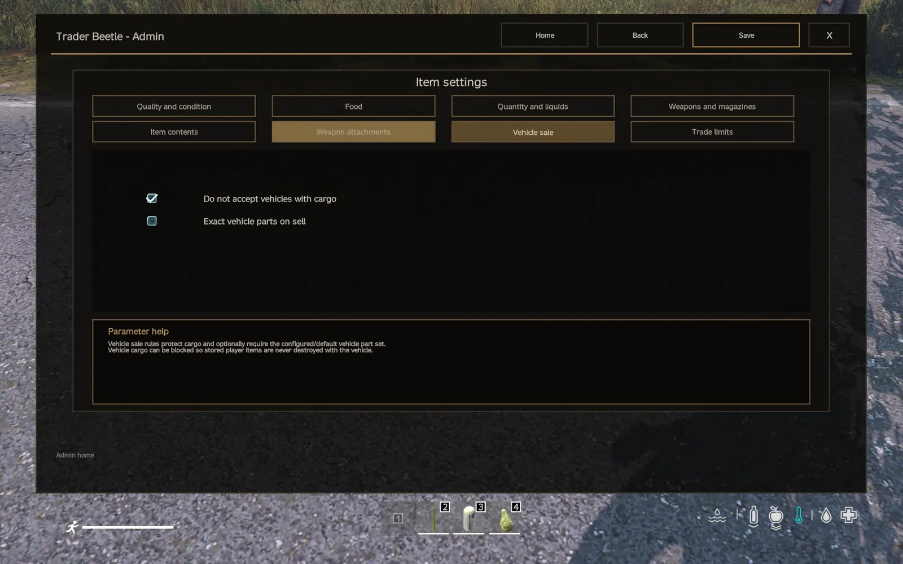
1
1
Правила для заряженного оружия и магазинов.Rules for loaded weapons and magazines.
Не принимать заряженное оружиеDo not accept loaded weapons
Что делаетWhat it doesЗаряженным считается оружие с патроном в патроннике, во внутреннем магазине или со вставленным магазином, в котором есть патроны.Loaded means a round in chamber, internal magazine ammunition or an inserted magazine containing rounds.
Принимать только пустые магазиныAccept only empty magazines
Что делаетWhat it doesОтдельный магазин как товар должен быть пустым. Если выключить, магазин с патронами принимается, но патроны не увеличивают цену магазина.A standalone magazine must be empty. If disabled, magazines with rounds are accepted, but ammunition does not increase magazine value.
Содержимое предметовItem contents
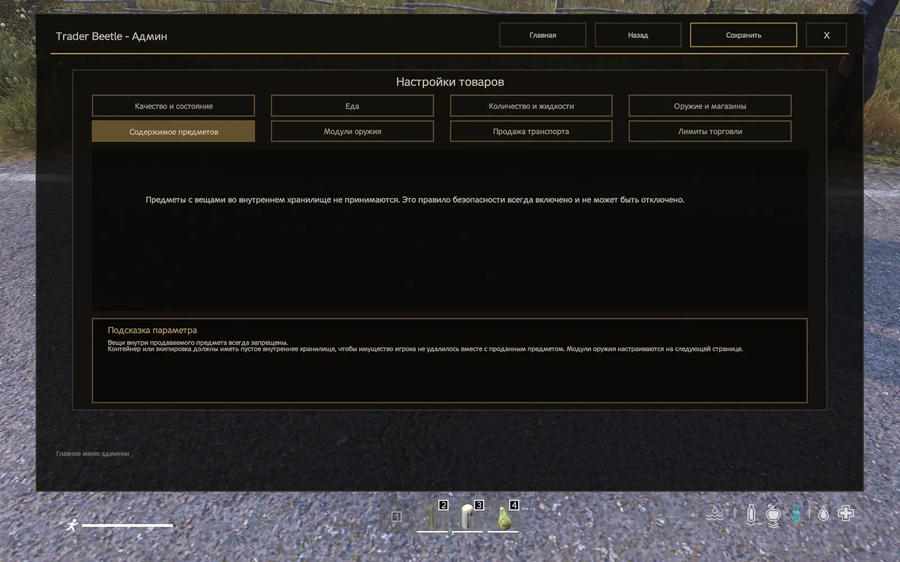
1
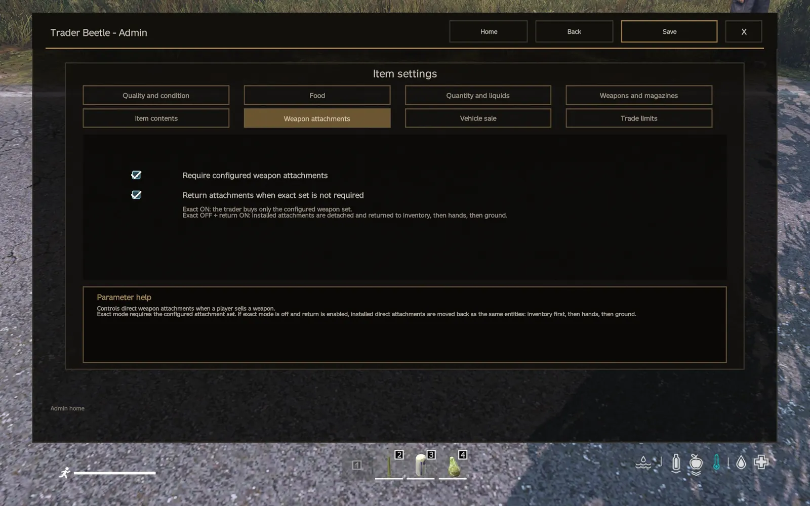
1
1
Защитное правило внутреннего cargo.Internal cargo safety rule.
Предметы с вещами внутри не принимаютсяItems with contents are never accepted
Что делаетWhat it doesЭто обязательное защитное правило. Контейнер, рюкзак или другой продаваемый объект должен иметь пустое внутреннее хранилище, чтобы вещи игрока не исчезли вместе с проданным родительским предметом.This is a mandatory safety rule. A container, backpack or other sold object must have empty internal cargo so player property cannot disappear with the sold parent item.
Модули оружияWeapon attachments
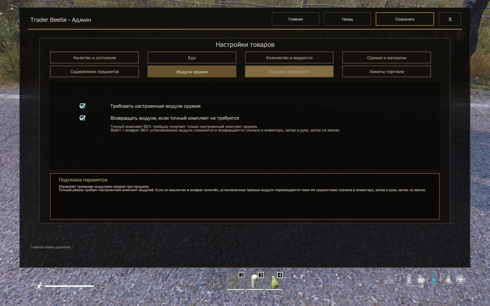
1
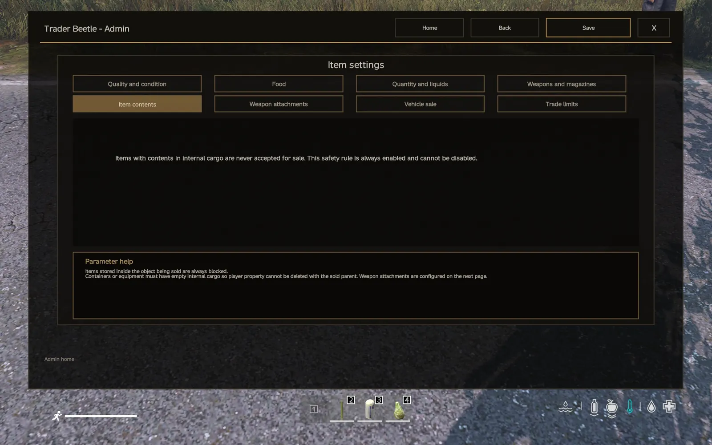
1
1
Совпадение настроенного комплекта и возврат модулей.Configured set matching and attachment return.
Что делаетWhat it doesЕсли включено, прямые модули оружия должны точно соответствовать конфигурации товара. Лишний или отсутствующий модуль отклоняет продажу.When enabled, direct weapon attachments must exactly match the item configuration. Extra or missing attachments reject the sale.
Возвращать модули, если точный комплект не требуетсяReturn attachments when exact set is not required
Что делаетWhat it doesКогда точное совпадение выключено, установленные прямые модули снимаются как те же сущности и возвращаются в инвентарь, затем в руки, затем на землю. Если безопасно вернуть нельзя, продажа отменяется.When exact matching is off, direct attachments are detached as the same entities and returned to inventory, then hands, then ground. If they cannot be returned safely, the sale is cancelled.
Продажа транспортаVehicle sale
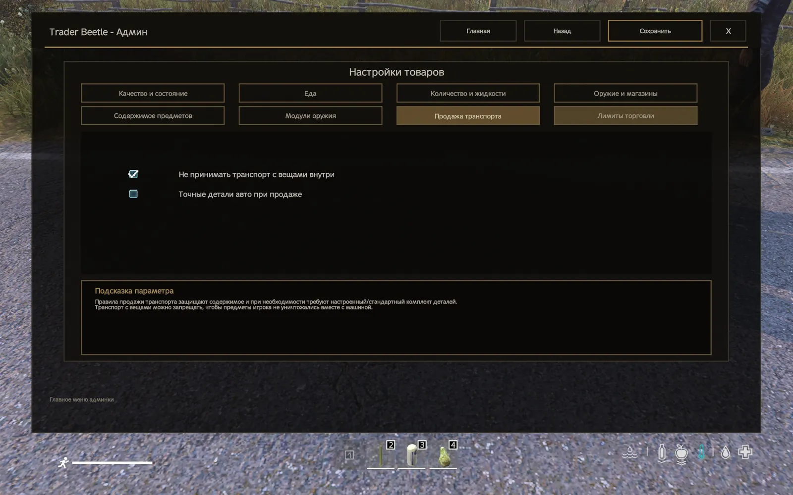
1
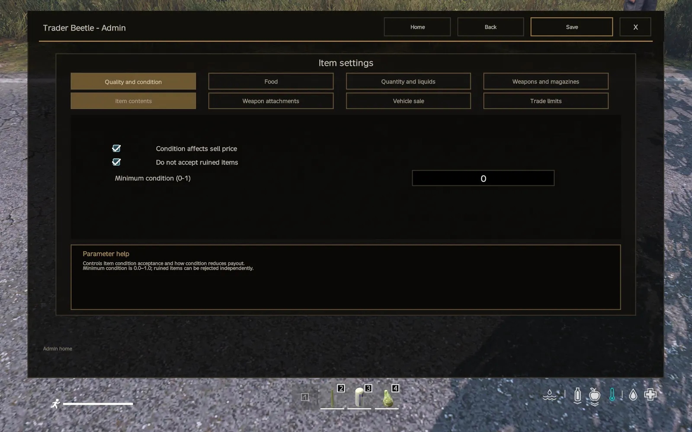
1
1
Cargo и комплект деталей при продаже машины.Cargo and part-set rules for vehicle sales.
Не принимать транспорт с вещами внутриDo not accept vehicles with cargo
Что делаетWhat it doesЕсли включено, машина с предметами в cargo не продаётся целиком. Это не даёт уничтожить вещи игрока вместе с автомобилем.When enabled, a vehicle containing cargo cannot be sold as a whole. This prevents player items from being destroyed with the vehicle.
Точные детали авто при продажеExact vehicle parts on sell
Что делаетWhat it doesЕсли включено, установленный комплект деталей должен соответствовать настроенным attachments товара или вычисленному стандартному комплекту.When enabled, installed vehicle parts must match the configured item attachments or the derived default kit.
Лимиты торговлиTrade limits
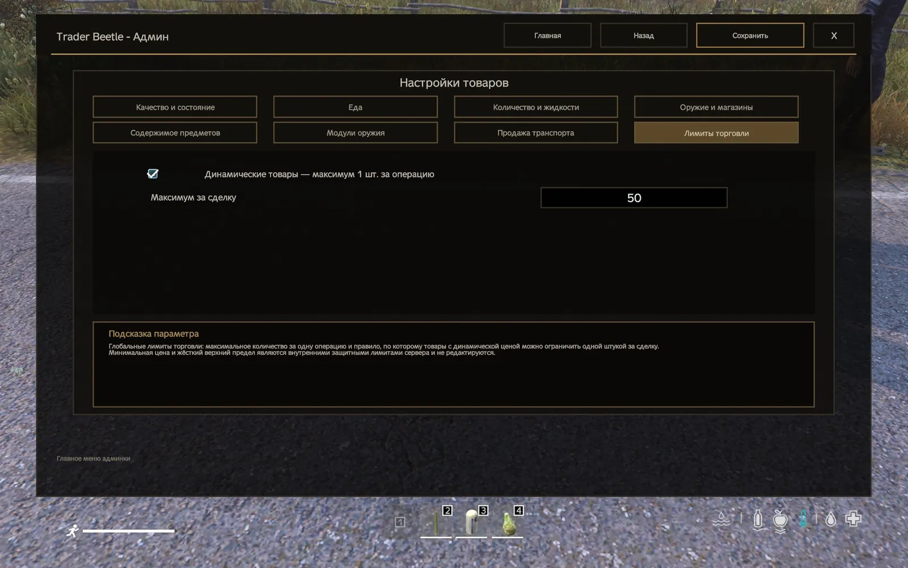
1
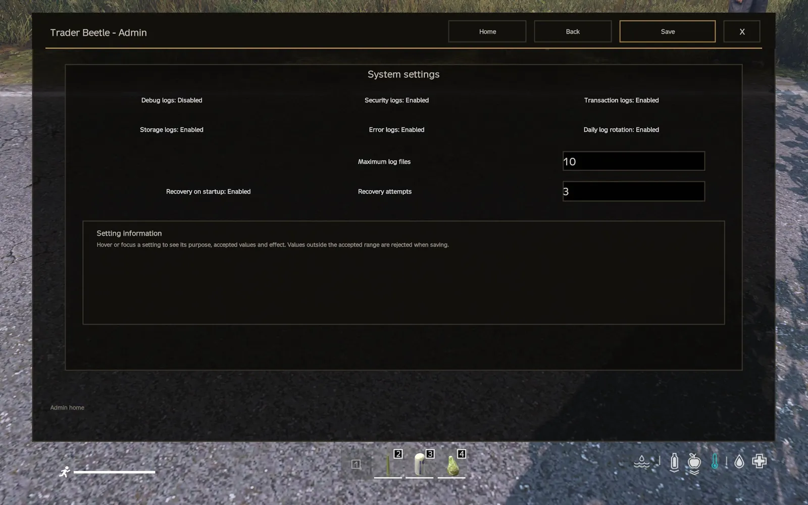
1
1
Ограничения количества в одной операции.Per-transaction quantity limits.
Динамические товары: максимум 1 шт. за операциюDynamic-price items: maximum 1 per transaction
Что делаетWhat it doesПринудительно продаёт или покупает динамический товар по одной единице, чтобы цена последовательно пересчитывалась между операциями.Forces dynamic-price items to trade one unit at a time so the price can update consistently between operations.
Максимум за сделкуMaximum per trade
Что делаетWhat it doesОбщий предел количества одной позиции в одной операции.Global quantity limit for one item line in a single transaction.
Caravan Trader Beetle
Валюта и сдача
Currency and change
Выберите готовую валюту или соберите свою из любых существующих предметов.
Select a preset currency or build your own from existing item classes.
В ванильном DayZ нет встроенных денег, поэтому после установки Trader Beetle нужно выбрать валюту. Выбранная валюта применяется ко всем Trader Beetle трейдерам.Vanilla DayZ has no built-in money system, so Trader Beetle needs an active currency. The selected currency applies to all Trader Beetle traders.
Текущая валютаCurrent currency
Что делаетWhat it doesПоказывает, какой набор денег сейчас активен для Trader Beetle.Shows which money set is currently active for Trader Beetle.
Готовые валютыCompatible currencies
Что делаетWhat it doesПозволяет одним нажатием выбрать совместимый готовый набор, включая встроенные TB dollars, TB dinars и TB BeetleCoin, а также доступные совместимые валюты установленных модов.Lets you select a compatible preset in one click, including built-in TB dollars, TB dinars and TB BeetleCoin plus compatible currencies from installed mods.
На практикеIn practiceНажатие на готовую валюту применяет её всем Trader Beetle трейдерам.Clicking a preset applies it to all Trader Beetle traders.
Использовать выбраннуюUse selected currency
Что делаетWhat it doesДелает выбранную свою валюту активной.Makes the selected custom currency active.
Назначить свою валютуAssign custom currency
Что делаетWhat it doesОткрывает список созданных вами валют, чтобы выбрать нужную.Opens your custom currency library so you can choose one.
Редактор одного номинала.Single denomination editor.
Если нужна своя валюта, сначала создайте название, затем добавьте каждый номинал отдельной строкой. Например три classname могут быть купюрами 100, 500 и 1000. Для каждого отдельно решите, можно ли им платить и можно ли выдавать его как сдачу. После сохранения выберите созданную валюту и назначьте её активной.For a custom currency, create the currency name first, then add each denomination as a separate row. For example, three classnames can represent notes worth 100, 500 and 1000. Decide separately whether each can be used for payment and whether it can be returned as change. Save the currency, select it, and make it active.
Название своей валютыCustom currency name
Что делаетWhat it doesПодпись, которая используется в списке валют и рядом с ценами.Label used in the currency list and next to prices.
ClassName предметаItem ClassName
Что делаетWhat it doesПредмет, который является купюрой или монетой. Этот classname должен реально существовать на сервере.Item used as a banknote or coin. The classname must actually exist on the server.
Найти и добавитьFind and add
Что делаетWhat it doesОткрывает поиск предмета валюты. Введите минимум 3 символа classname или названия, выберите результат и добавьте его как новый номинал.Opens currency item search. Enter at least 3 characters of the classname or item name, choose a result and add it as a denomination.
Добавить номиналAdd denomination
Что делаетWhat it doesДобавляет новый класс денег в текущую валюту.Adds another money item class to the current currency.
Удалить номиналDelete denomination
Что делаетWhat it doesУдаляет выбранный номинал из текущей валюты.Removes the selected denomination from the current currency.
НоминалValue
Что делаетWhat it doesСколько денежных единиц стоит один предмет этого classname.How many currency units one item of this classname represents.
ПримерExampleТри класса могут иметь номиналы 100, 500 и 1000.Three item classes can represent values 100, 500 and 1000.
ОплатаPayment
Что делаетWhat it doesРазрешает использовать этот номинал для оплаты покупки.Allows this denomination to be used for payment.
СдачаChange
Что делаетWhat it doesРазрешает системе выдавать этот номинал как сдачу.Allows the system to return this denomination as change.
Разрешить сдачуAllow change
Что делаетWhat it doesГлобально разрешает возврат разницы, если игрок оплатил более крупным номиналом.Globally allows returning the difference when the player pays with a larger denomination.
ПримерExampleЦена 600, игрок даёт 1000. При доступной сдаче 400 система пытается вернуть подходящими разрешёнными номиналами.Price 600, player pays 1000. If change is enabled, the system attempts to return 400 using allowed denominations.
В ZIP рядом с Wiki лежит готовый types.xml со всеми 33 встроенными денежными classname Caravan Trader Beetle. Он сделан по присланному вами формату types.The ZIP includes a ready types.xml with all 33 built-in Caravan Trader Beetle money classnames, using the types format you provided.
Caravan Trader Beetle
Покупка и выдача транспорта
Vehicle purchase and delivery
Как машина появляется после оплаты и что на это влияет.
How a purchased vehicle is spawned and what controls the spawn.
Транспорт покупается отдельно от обычной корзины. Перед списанием денег сервер сначала должен убедиться, что машину можно безопасно создать.Vehicles are purchased separately from the normal cart. Before charging money, the server first verifies that the vehicle can be spawned safely.
Покупка машины пошаговоVehicle purchase step by step
01
Добавьте classname машины в категорию трейдера и включите Продавать игроку.
02
В Общих настройках трейдера при желании включите Точка выдачи купленного транспорта и задайте безопасное место парковки.
03
Если точная точка выключена, Trader Beetle сам ищет свободное место вокруг трейдера между минимальным и максимальным радиусом.
04
Игрок выбирает машину и подтверждает покупку. Сначала сервер проверяет место, затем оплату, и только после успешной проверки создаёт транспорт.
05
Если безопасной точки нет, сделка отменяется до списания денег. Освободите место или измените радиусы и повторите тест.
01
Add the vehicle classname to a trader category and enable Sell to player.
02
Optionally enable Vehicle purchase spawn point in the trader General settings and place it on a safe parking area.
03
If the exact point is disabled, Trader Beetle searches for free space around the trader between the minimum and maximum spawn radius.
04
The player selects the vehicle and confirms the purchase. The server checks the spawn point first, then payment, and creates the vehicle only after validation succeeds.
05
If no safe point exists, the trade is cancelled before money is charged. Clear the area or adjust the radii and test again.
Торговля транспортомVehicle trade
Что делаетWhat it doesГлавный переключатель специальной покупки и продажи автомобилей и лодок Trader Beetle.Master switch for Trader Beetle special vehicle and boat buy/sell processing.
На практикеIn practiceОставьте включённым, если хотя бы один трейдер работает с транспортом.Keep it enabled if any trader handles vehicles.
Точная точка выдачи у трейдераExact trader spawn point
Что делаетWhat it doesЕсли у конкретного трейдера включена Точка выдачи купленного транспорта, система использует именно её.If a trader has Vehicle purchase spawn point enabled, that exact location is used.
На практикеIn practiceОна имеет приоритет над автоматическим поиском.It overrides automatic spawn search.
Минимальный радиус спавнаMinimum spawn radius
Что делаетWhat it doesЕсли точной точки нет, автоматический поиск свободного места начинается на этом расстоянии от трейдера.If no exact point exists, automatic free-space search starts at this distance from the trader.
Максимальный радиус спавнаMaximum spawn radius
Что делаетWhat it doesВнешняя граница автоматического поиска. Большее значение повышает шанс найти место, но машина может появиться дальше.Outer limit of automatic search. Larger values improve the chance of finding space but may place the vehicle farther away.
Радиус свободного местаClear space radius
Что делаетWhat it doesТребуемый свободный радиус вокруг кандидата на точку спавна.Required free radius around a candidate spawn position.
Свободное место сверхуOverhead clearance
Что делаетWhat it doesПроверяет свободную высоту и отбрасывает точки под низкими крышами, потолками и другими препятствиями.Checks vertical clearance and rejects low roofs, ceilings and other overhead obstacles.
Радиус поиска транспортаVehicle scan radius
Что делаетWhat it doesПоле совместимости со старым поиском транспорта рядом. Текущая parking-session продажа и выдача купленной машины его не используют.Compatibility field retained from the old nearby-vehicle scan. Current parking-session sales and vehicle purchase spawning do not use it.
На практикеIn practiceОбычно оставьте стандартное значение.Normally leave the default value.
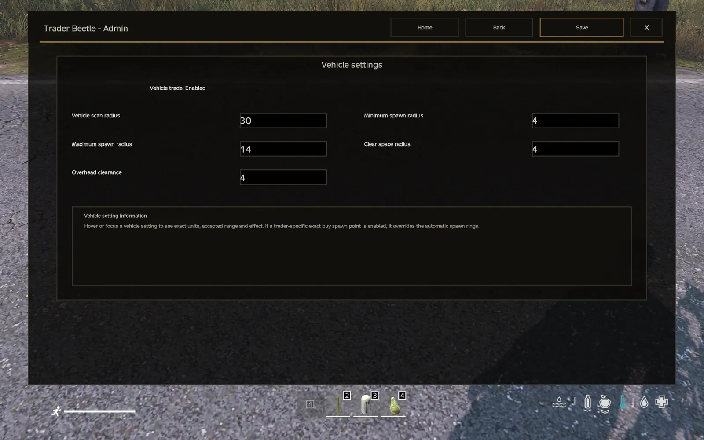
1
1
Глобальные параметры поиска места для купленной машины.Global purchased-vehicle spawn search settings.
Если точная точка занята или небезопасна, либо автоматический поиск не находит свободное место, покупка отменяется до списания денег. Это специально сделано, чтобы игрок не платил за машину, которую сервер не смог создать.If the exact point is blocked or unsafe, or automatic search cannot find free space, the purchase is cancelled before money is charged. This prevents paying for a vehicle the server could not create.
Caravan Trader Beetle
Продажа автомобиля и груза из транспорта
Selling a vehicle and vehicle cargo
Это два разных режима. В обоих игрок сначала фиксирует конкретную машину в временной парковочной зоне.
These are two different modes. Both first capture one exact vehicle in a temporary parking zone.
Не путайте две точки. Точка выдачи купленного транспорта в настройках трейдера нужна только для машин, которые игрок покупает. Временная парковочная зона создаётся автоматически только на время продажи целой машины или продажи вещей из её багажа.Do not mix up the two locations. The exact purchased-vehicle spawn point is only for vehicles the player buys. A temporary parking area is created automatically only while selling a whole vehicle or selling items from its cargo.
Что видит игрокWhat the player sees
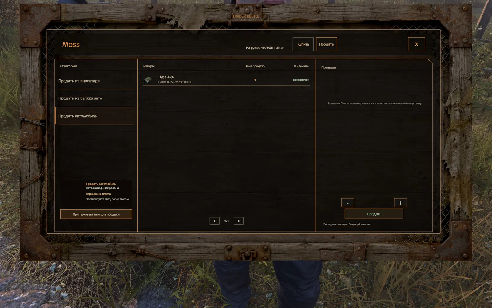
1
2
3
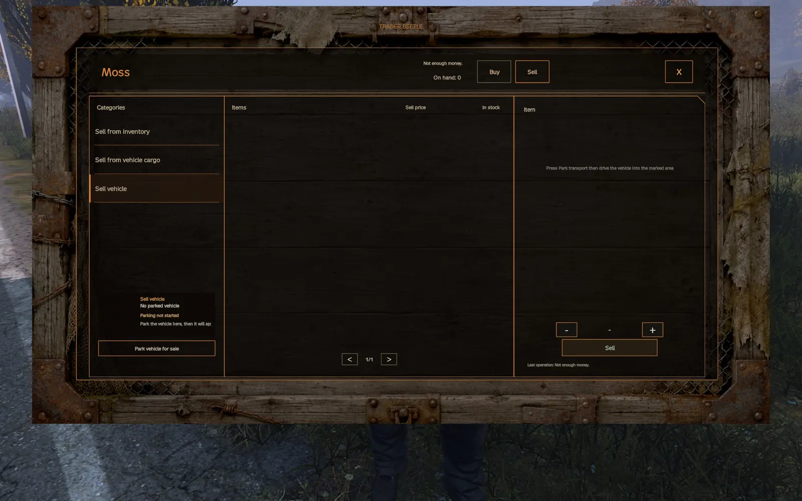
1
2
3
1
Продать из багажа авто.Sell from vehicle cargo.
2
Продать автомобиль.Sell vehicle.
3
Кнопка начала парковки выбранного режима.Button that starts parking for the selected mode.
Продажа целой машины пошаговоWhole vehicle sale step by step
01
Откройте продажу у трейдера и выберите Продать автомобиль.
02
Нажмите Припарковать авто для продажи. Trader Beetle создаст временную парковочную зону перед трейдером.
03
Сядьте именно в автомобиль, который хотите продать, и сами пригоните его в отмеченную зону.
04
Остановитесь внутри круга. Система фиксирует именно эту машину.
05
Выйдите из машины и попросите пассажиров выйти. Занятый транспорт не считается готовым к сделке.
06
Вернитесь к трейдеру. Зафиксированная машина появится как доступная позиция продажи. Нажмите Продать и завершите сделку.
01
Open the trader Sell page and choose Sell vehicle.
02
Press Park vehicle for sale. Trader Beetle creates a temporary parking zone in front of the trader.
03
Drive the exact vehicle you want to sell into the marked parking area yourself.
04
Stop inside the circle. The system captures that exact vehicle.
05
Exit the vehicle and ask all passengers to leave. An occupied vehicle is not ready for sale.
06
Return to the trader. The captured vehicle appears as an available sale item. Press Sell to complete the trade.
1
1
1
После нажатия появляется временная парковочная зона и таймер.A temporary parking zone and timer appear after starting the session.
1
1
После фиксации система просит выйти из транспорта и вернуться к трейдеру.After capture, the system asks you to exit the vehicle and return to the trader.
Машина должна продаваться этим трейдеромTrader must buy this vehicle
Что делаетWhat it doesДля продажи целой машины у трейдера должна существовать активная позиция этого точного classname с включённым Покупать у игрока.For whole-vehicle sale, the trader must have an active item entry for that exact classname with Buy from player enabled.
Сломанный транспортBroken vehicle
Что делаетWhat it doesRuined машина не проходит продажу целиком.A ruined vehicle cannot be sold as a whole.
ПассажирыPassengers
Что делаетWhat it doesДля завершения продажи в машине не должно оставаться людей.No crew may remain inside the vehicle when completing the sale.
Не принимать транспорт с вещами внутриDo not accept vehicles with cargo
Что делаетWhat it doesЕсли глобальное правило включено, машина с cargo будет отклонена. Освободите багаж перед продажей целиком.If the global rule is enabled, a vehicle containing cargo is rejected. Empty the cargo before selling the whole vehicle.
Если продажа машины с грузом разрешенаIf whole-vehicle sale with cargo is allowed
Что делаетWhat it doesПри выключенном запрете система может разрешить продажу целой машины с содержимым, но перед завершением показывает предупреждение: груз будет удалён вместе с проданным транспортом.When the cargo restriction is disabled, the whole vehicle may be sold with contents, but the system warns that the cargo will be deleted together with the sold vehicle.
На практикеIn practiceБезопаснее сначала использовать Продать из багажа авто или вручную освободить багаж, и только потом продавать машину целиком.The safer flow is to use Sell from vehicle cargo first or empty the cargo manually, then sell the vehicle itself.
Точные детали авто при продажеExact vehicle parts on sell
Что делаетWhat it doesПри включении машина должна соответствовать настроенному или стандартному комплекту деталей.When enabled, the vehicle must match the configured or derived default part set.
Что делаетWhat it doesПарковка создаётся отдельно для конкретного игрока и конкретной сделки. Она не является постоянной точкой спавна или парковки сервера.Parking is temporary and belongs to one player and one trade. It is not a permanent server spawn or parking point.
На практикеIn practiceЕсли отъехать уже зафиксированной машиной из зоны, система попросит вернуть её. На возврат даётся 10 секунд.If the captured vehicle is moved out of the zone, the system asks you to return it within 10 seconds.
Продажа из багажа пошаговоCargo sale step by step
Этот режим не продаёт сам автомобиль. Он временно фиксирует машину как источник предметов, после чего в списке продажи появляются подходящие вещи из её cargo.This mode does not sell the vehicle itself. It temporarily captures the vehicle as an item source, then compatible cargo items appear in the sell list.
01
Выберите Продать из багажа авто.
02
Нажмите Припарковать авто с грузом.
03
Пригоните машину с нужными вещами в отмеченную парковочную зону.
04
После фиксации вернитесь к трейдеру.
05
В списке появятся подходящие предметы из cargo этой конкретной машины. Выберите нужные позиции и продайте их обычным способом.
06
Сама машина при этом не продаётся.
01
Choose Sell from vehicle cargo.
02
Press Park vehicle with cargo.
03
Drive the vehicle containing the items into the marked parking zone.
04
After capture, return to the trader.
05
Compatible items from that exact vehicle cargo appear in the sell list. Select items and sell them normally.
06
The vehicle itself is not sold.
1
1
1
Режим Передача груза из транспорта показывает отдельную парковочную зону.Vehicle cargo handoff uses its own temporary parking zone.
Точка выдачи купленного транспорта из настроек трейдера и временная парковочная зона продажи это разные вещи. Точка выдачи используется для покупки машины. Парковочная зона создаётся автоматически только на время продажи машины или её груза.The purchased-vehicle spawn point and the temporary sale parking zone are different systems. The spawn point is used for buying a vehicle. The parking zone is created automatically only while selling a vehicle or its cargo.
Caravan Trader Beetle
Создание караванного трейдера
Create a caravan trader
Караванщик имеет обычный магазин, но может двигаться по маршруту между остановками.
A caravan trader has a normal shop and can travel between configured stops.
1
2
1
2
1
Имя, название и серверный ID.Name, title and server ID.
2
Создать маршрут сейчас или оставить настройку на потом.Create the route now or configure it later.
Имя трейдераTrader name
Что делаетWhat it doesИмя караванщика.Caravan trader name.
НазваниеTrader title
Что делаетWhat it doesРоль или подпись караванщика.Role or title shown for the caravan trader.
Стартовая точкаStart point
Что делаетWhat it doesМесто появления и начало каждого нового рейса. Это не обычная остановка.Where the trader appears and begins a new trip. It is not a normal stop.
Создать маршрутCreate route
Что делаетWhat it doesОткрывает карту, где можно сразу указать старт и точки маршрута.Opens the map so you can define the start and route stops immediately.
Зациклить маршрутLoop route
Что делаетWhat it doesПосле последней остановки маршрут продолжает повторяться до ручной остановки.After the final stop, the route continues looping until manually stopped.
На практикеIn practiceПри включённом цикле расписание хранится, но не используется.While looping is enabled, the schedule is saved but not used.
1
2
1
2
1
Редактор выбранной точки маршрута: имя, координаты и действия.
Editor for the selected route point: name, coordinates and actions.
2
Список точек маршрута и кнопки порядка.
Route point list and ordering buttons.
Для первого теста сделайте маршрут из 2-3 точек на открытой местности. Сначала убедитесь, что NPC проходит простой маршрут, и только потом добавляйте сложные дворы, здания и длинные объезды.For the first test, use a 2-3 stop route on open terrain. Verify a simple route first, then add difficult yards, buildings and long detours.
Caravan Trader Beetle
Управление активными караванами
Managing caravans
Быстрые команды для уже созданных караванщиков.
Quick controls for existing caravan traders.
1
2
3
1
2
3
1
Карта активного каравана и маршрута.
Map of the active caravan and route.
2
Список караванов и верхние кнопки Изменить и Выключить.
Caravan list with Edit and Deactivate at the top.
3
Нижние команды: запуск, остановка, фильтры, переключение режима и вход в маршрут или поведение.
Bottom commands: start, stop, filters, mode switch and entry to route or behaviour.
Показать выбранногоShow selected
Что делаетWhat it doesПоказывает положение выбранного каравана на карте.Shows the selected caravan position on the map.
Показать всех активныхShow all active
Что делаетWhat it doesПоказывает сразу все караваны, которые сейчас находятся в активном состоянии.Shows all caravans that are currently active.
Показать маршрут выбранногоShow selected route
Что делаетWhat it doesОтображает маршрут выбранного каравана.Displays the selected caravan route.
Запустить караван сейчасStart caravan now
Что делаетWhat it doesЗапускает выбранный маршрут вручную без ожидания следующего расписания.Starts the selected route manually without waiting for the next schedule time.
Остановить караванStop caravan
Что делаетWhat it doesОстанавливает текущий рейс выбранного караванщика.Stops the current trip of the selected caravan trader.
Запустить все сейчасStart all now
Что делаетWhat it doesПытается запустить все подходящие караваны сразу.Attempts to start all eligible caravans immediately.
На практикеIn practiceИспользуйте осторожно, если на сервере много караванов.Use carefully when the server has many caravans.
Остановить всеStop all
Что делаетWhat it doesОстанавливает все текущие рейсы.Stops all current caravan trips.
Включить все / Выключить всеEnable all / Disable all
Что делаетWhat it doesМассово меняет активность всех караванов.Changes activation state for all caravans in bulk.
Корректировать маршрутEdit route
Что делаетWhat it doesОткрывает редактор маршрута выбранного каравана.Opens the selected caravan route editor.
ПоведениеBehaviour
Что делаетWhat it doesОткрывает скорость, двери, приветствия и защиту выбранного караванщика.Opens speed, doors, greeting and defence settings for the selected caravan.
Зациклить маршрутLoop route
Что делаетWhat it doesПереключает непрерывный цикл маршрута выбранного каравана.Toggles continuous route looping for the selected caravan.
Построить дорогиBuild roads
Что делаетWhat it doesЗапускает подготовку дорожных данных, которые используются дорожными режимами маршрута караванов.Builds the road data used by caravan road-routing modes.
На практикеIn practiceИспользуйте, если дорожная навигация ещё не подготовлена или после изменений, требующих пересборки дорожных данных.Use it when road-routing data has not been prepared yet or needs rebuilding after relevant changes.
Кнопки Запустить все, Остановить все, Включить все и Выключить все действуют сразу на несколько караванов. Перед нажатием проверьте, что вы действительно хотите массовое действие.Start all, Stop all, Enable all and Disable all affect multiple caravans. Confirm that you really want a bulk action before using them.
Caravan Trader Beetle
Маршрут, остановки и расписание
Route, stops and schedule
Здесь решается куда идёт караван, сколько ждёт и когда стартует.
This is where you define where the caravan travels, waits and starts.
1
2
1
2
1
Основные параметры маршрута: включение, случайность, скорость, радиус и задержка.
Main route parameters: enable, randomness, speed, radius and resume delay.
2
Переходы в окно Маршрут и расписание, Поведение и Уведомления.
Shortcuts to Route and schedule, Behaviour and Notifications.
Маршрут строится такRoute building workflow
01
Сначала задайте Стартовую точку. Это место появления каравана и начало нового рейса, а не обычная торговая остановка.
02
Добавьте остановки. Самый быстрый способ: встаньте в нужном месте и нажмите Добавить здесь. Также можно использовать город как остановку или поставить точку двойным нажатием по карте.
03
Для каждой остановки задайте понятное имя и Время торговли в точке. Это время, которое NPC реально ждёт там перед продолжением пути.
04
Кнопками Вверх и Вниз выставьте порядок обычного маршрута. Если включён Случайный маршрут, этот строгий порядок заменяется случайным набором или порядком.
05
Откройте Поведение и выберите скорость, работу дверей и Маршрут по дорогам. Для первого теста лучше Пешком или Бег и простой открытый путь.
06
Нажмите Запустить сейчас и пройдите маршрут вместе с NPC. Используйте Показать положение, чтобы быстро найти его на карте.
07
Только после успешного ручного теста добавляйте Расписание или Зациклить маршрут.
01
Set the Start point first. This is where the caravan appears and begins a new trip. It is not a normal trading stop.
02
Add stops. The fastest method is to stand at the desired location and press Add here. You can also add a city as a stop or place a point by double-clicking the map.
03
Give every stop a clear name and set Trading time at stop. This is how long the NPC actually waits there before continuing.
04
Use Up and Down to define the normal route order. When Random route is enabled, that strict order is replaced by a random subset or order.
05
Open Behaviour and choose movement speed, door handling and Road routing. For the first test, use Walk or Run and a simple open route.
06
Press Start now and follow the NPC through the route. Use Show position to locate the trader quickly on the map.
07
Only after the manual test succeeds should you add a Schedule or enable Loop route.
МаршрутRoute enabled
Что делаетWhat it doesГлавный переключатель движения. Если выключен, ручные и плановые рейсы не стартуют.Master travel switch. When disabled, manual and scheduled trips do not start.
Случайный маршрутRandom route
Что делаетWhat it doesДля каждого рейса выбирает случайный набор или порядок остановок вместо строго заданной последовательности.Selects a random subset or order of stops for a trip instead of the exact configured order.
Количество случайных точекRandom stop count
Что делаетWhat it doesСколько остановок использовать в случайном рейсе. Работает только при включённом Случайном маршруте.How many stops to use in a random trip. Only applies when Random route is enabled.
Радиус остановкиStop radius
Что делаетWhat it doesИгрок внутри этого радиуса может остановить караванщика для взаимодействия. Допустимо 1-100 м.A player inside this radius can cause the caravan trader to stop for interaction. Accepted range is 1-100 m.
Задержка продолженияResume delay
Что делаетWhat it doesСколько секунд ждать перед продолжением пути после взаимодействия или остановки. 0 означает без дополнительной паузы.Seconds to wait before resuming travel after interaction or stopping. 0 means no extra delay.
Стартовая точка
Start point
Это место, где караван появляется и откуда реально начинается новый рейс. Она не обязана быть торговой остановкой.
This is where the caravan appears and where a new trip actually begins. It does not have to be a trading stop.
Остановка
Stop
Обычная точка маршрута, где караванщик приходит, торгует заданное время и потом идёт дальше.
A normal route point where the caravan arrives, trades for the configured time and then continues.
Расписание
Schedule
Расписание не строит сам маршрут. Оно только говорит, когда уже готовый маршрут должен стартовать.
The schedule does not build the route itself. It only decides when an already prepared route should start.
Зациклить маршрут
Loop route
Зацикливание означает, что караван будет ходить по кругу без ожидания нового расписания. Это отдельная логика, а не просто повтор времени старта.
Looping means the caravan keeps cycling without waiting for a new schedule entry. It is separate logic, not just another start time.
Точки маршрутаRoute stops
1
2
1
2
1
Карта маршрута.Route map.
2
Список точек и управление порядком.Stop list and ordering controls.
СтартStart point
Что делаетWhat it doesОтдельная точка, откуда начинается рейс.Separate point where the trip begins.
Название точкиStop name
Что делаетWhat it doesЧеловекочитаемое имя остановки. Используется в списке и может попадать в уведомления.Human-readable stop name used in lists and notifications.
ПозицияPosition
Что делаетWhat it doesКоординаты остановки.Stop coordinates.
Время торговли в точке, сек.Trading time at stop, sec.
Что делаетWhat it doesСколько времени караванщик остаётся на остановке и доступен там как торговец.How long the caravan stays at the stop and trades there.
Вверх / внизUp / down
Что делаетWhat it doesМеняет порядок точек обычного маршрута.Changes stop order for a normal route.
Добавить город как остановкуAdd city as stop
Что делаетWhat it doesПозволяет быстро взять город как основу точки. После добавления проверьте фактическое место в игре.Uses a city as a quick stop base. Verify the actual location in game afterwards.
Добавить здесьAdd here
Что делаетWhat it doesБерёт текущую позицию администратора и создаёт из неё новую остановку.Uses the administrator current position to create a new stop.
На практикеIn practiceЭто самый понятный способ строить маршрут на местности: пройдите путь сами и добавляйте точки там, где NPC действительно должен ждать.This is the clearest way to build a route in the world: walk the route yourself and add stops where the NPC should actually wait.
Редактировать стартовуюEdit start point
Что делаетWhat it doesПозволяет отдельно изменить место начала каждого рейса, не перестраивая обычные остановки.Changes the start of each trip without rebuilding the normal stops.
Запустить сейчасStart now
Что делаетWhat it doesЗапускает выбранного караванщика вручную, не ожидая расписания.Starts the selected caravan immediately without waiting for schedule.
На практикеIn practiceИспользуйте для проверки нового маршрута.Use this to test a new route.
Показать положениеShow position
Что делаетWhat it doesОткрывает карту с текущим положением караванщика. Кнопка Обновить перечитывает его позицию.Opens a map with the current caravan position. Refresh reads the current position again.
На практикеIn practiceЕсли трейдер сейчас не в пути, карта всё равно помогает проверить старт и сохранённые точки.Even when the trader is not travelling, the map helps verify the saved start and route points.
1
1
1
Карта текущего положения караванщика и кнопка Обновить.Current caravan position map and Refresh control.
Пример маршрутаRoute example
Простой рабочий пример: Старт у лагеря, затем Остановка 1 у заправки на 60 секунд, Остановка 2 в центре города на 180 секунд, Остановка 3 у военной базы на 90 секунд. Сначала запустите такой маршрут вручную. Если NPC проходит все три точки, только потом включайте расписание или случайный порядок.A simple working example: Start at the camp, Stop 1 at a gas station for 60 seconds, Stop 2 in the town center for 180 seconds, Stop 3 near a military base for 90 seconds. Run this route manually first. If the NPC reaches all three stops, then enable schedule or random order.
РасписаниеSchedule
1
1
1
Слоты времени и дней недели.Time and weekday schedule entries.
Время стартаStart time
Что делаетWhat it doesВремя запуска конкретного расписания.Start time of one schedule entry.
По дням неделиBy days of week
Что делаетWhat it doesОпределяет, в какие дни этот слот разрешён.Defines which weekdays this schedule entry may run.
Допуск после рестартаRestart grace
Что делаетWhat it doesПозволяет восстановить недавно пропущенный старт после перезапуска сервера в пределах заданного окна.Allows a recently missed scheduled launch to be recovered after server restart within the configured grace window.
После рестарта: начать маршрут зановоAfter restart: start route over
Что делаетWhat it doesЕсли рейс был активен, после рестарта начинает его с начала.If a trip was active, starts it again from the beginning after restart.
После рестарта: продолжить с безопасной точкиContinue from last safe point
Что делаетWhat it doesПытается продолжить маршрут с сохранённой безопасной позиции.Attempts to continue from a saved safe route point.
После рестарта: ждать расписанияWait for schedule
Что делаетWhat it doesНе возобновляет старый рейс автоматически. Следующий старт ждёт расписания.Does not automatically resume the old trip. The next launch waits for schedule.
Loop route и Schedule решают разные задачи. Loop route означает непрерывный цикл. Schedule означает отдельные запуски по времени. При включённом Loop route расписание сохранено, но временно не используется.Loop route and Schedule solve different problems. Loop route means continuous cycling. Schedule means separate timed starts. While Loop route is enabled, the schedule is saved but temporarily unused.
Caravan Trader Beetle
Поведение, защита и уведомления каравана
Caravan behaviour, defence and notifications
Как NPC двигается, общается и сообщает игрокам о маршруте.
How the NPC moves, interacts and informs players.
1
2
1
2
1
Движение, препятствия, двери, приветствия и режим после рестарта.
Movement, obstacles, doors, greetings and after-restart mode.
2
Скорость, маршруты по дорогам и боевое поведение защиты.
Speed, road-routing choices and defensive combat behaviour.
Скорость движенияMovement speed
Что делаетWhat it doesВыбирает Медленно, Пешком, Бег или Спринт.Selects Slow, Walk, Run or Sprint.
На практикеIn practiceДля первого теста маршрута Пешком или Бег проще контролировать визуально.Walk or Run are easier to observe during the first route test.
Маршрут по дорогам: Выкл.Road routing: Off
Что делаетWhat it doesНе даёт дорогам специального приоритета. Караван использует обычную навигацию.Gives roads no special priority. The caravan uses normal navigation.
Сначала дорогиRoad first
Что делаетWhat it doesСильнее предпочитает дорожную сеть, если дорожный вариант остаётся разумным.Strongly prefers the road network when a reasonable road route is available.
Объезд +50%Detour +50%
Что делаетWhat it doesРазрешает выбрать дорожный путь, даже если он заметно длиннее прямого маршрута, в пределах установленного допуска.Allows a road route even when it is noticeably longer than the direct path, within the configured detour tolerance.
Мягкий приоритетSoft roads
Что делаетWhat it doesПредпочитает дороги, но легче отказывается от них, если дорожный вариант неудобен.Prefers roads but gives up that preference more easily when the road route is impractical.
Разрешить преодолевать препятствияAllow climb
Что делаетWhat it doesРазрешает подходящее преодоление низких препятствий на пути.Allows suitable traversal of low obstacles along the route.
Открывать двериOpen doors
Что делаетWhat it doesРазрешает открывать доступные двери по маршруту.Allows the NPC to open usable doors along the route.
Приветствовать игроковGreet players
Что делаетWhat it doesРазрешает караванщику подходить, приветствовать и ждать игрока.Allows the caravan trader to approach, greet and wait for players.
Ожидание игрокаWait near player seconds
Что делаетWhat it doesОбычное время ожидания рядом с игроком.Normal waiting time near a player.
Задержка между приветствиямиGreeting cooldown seconds
Что делаетWhat it doesНе даёт одному игроку постоянно запускать приветствие повторно.Prevents the same player from repeatedly triggering the greeting too often.
НеуязвимостьInvulnerable
Что делаетWhat it doesДелает NPC неуязвимым. Пока включено, Множитель здоровья практически не влияет на получаемый урон.Makes the NPC invulnerable. While enabled, Health multiplier has little practical effect on received damage.
Множитель здоровьяHealth multiplier
Что делаетWhat it doesУвеличивает фактическую живучесть только у уязвимого караванщика.Increases effective durability only when the caravan trader is vulnerable.
Защищаться от заражённых и животныхDefend from infected and animals
Что делаетWhat it doesРазрешает ответный бой при атаке.Allows retaliation when attacked by infected or animals.
Защищаться от игроковDefend from players
Что делаетWhat it doesРазрешает ответный бой против игроков.Allows retaliation against players.
Радиус защитыDefence range
Что делаетWhat it doesОграничивает, насколько далеко NPC будет преследовать цель во время защиты.Limits how far the NPC will pursue a target while retaliating.
Время защитыDefence time
Что делаетWhat it doesКак долго сохраняется защитная реакция.How long the defensive response remains active.
Задержка удараMelee cooldown
Что делаетWhat it doesМинимальная пауза между ударами ближнего боя.Minimum delay between melee attacks.
Урон удараMelee damage
Что делаетWhat it doesМножитель урона ближней атаки.Melee damage multiplier.
Уведомления игрокамPlayer notifications
1
2
1
2
1
События маршрута.Route events.
2
Фильтры получателей.Recipient filters.
Уведомить при стартеNotify on start
Что делаетWhat it doesОтправляет сообщение, когда караван реально выходит со стартовой точки.Sends a message when the caravan actually leaves the start point.
Прибытие в каждую точкуArrival at each stop
Что делаетWhat it doesОтправляет сообщение при фактическом прибытии на остановку.Sends a message when the caravan actually reaches a stop.
Отправление из точкиDeparture from stop
Что делаетWhat it doesОтправляет сообщение при выходе с остановки к следующей точке.Sends a message when leaving a stop toward the next one.
Свой текст уведомленияCustom notification text
Что делаетWhat it doesНеобязательный текст. Пустое поле использует встроенный локализованный вариант.Optional text. Empty field uses the built-in localized message.
Случайная часть игроковRandom players, %
Что делаетWhat it doesСообщение получает только указанный процент подходящих игроков.Only the configured percentage of eligible players receives the message.
Только игрокам в радиусеPlayers within radius
Что делаетWhat it doesОграничивает получателей расстоянием от караванщика.Limits recipients by distance from the caravan trader.
Только игрокам с предметомRequired inventory item
Что делаетWhat it doesУведомление получает только игрок, у которого есть заданный ClassName в инвентаре.Only players carrying the configured item ClassName receive the notification.
Фильтры складываются. Если включены радиус, обязательный предмет и случайный процент, игрок должен пройти все включённые условия.Filters combine. If radius, required item and random percentage are enabled, the player must pass every enabled condition.
Caravan Trader Beetle
Доступ к админке и отдельным трейдерам
Admin and trader access
Постоянные администраторы, временный пароль и закрытые магазины.
Permanent administrators, temporary password and restricted shops.
Steam ID администраторовAdmin Steam IDs
Что делаетWhat it doesСписок дополнительных постоянных администраторов Trader Beetle.List of additional permanent Trader Beetle administrators.
На практикеIn practicePrimaryAdminSteamId остаётся главным и задаётся в admin.json.PrimaryAdminSteamId remains the primary administrator and is configured in admin.json.
Имя для отображенияDisplay name
Что делаетWhat it doesНеобязательная удобная подпись рядом со SteamID64.Optional human-readable label stored next to the SteamID64.
ПарольPassword
Что делаетWhat it doesНеобязательный пароль временного доступа в текущей сессии.Optional password for temporary access during the current session.
Ограничить доступ по SteamID64Restrict access by SteamID64
Что делаетWhat it doesНастройка конкретного трейдера. Если включена, магазин открывается только игрокам из его списка.Per-trader setting. When enabled, only players in that trader allowed list can use the shop.
Найти и добавить игрокаFind and add player
Что делаетWhat it doesИщет онлайн-игрока минимум по 3 цифрам SteamID64 и позволяет быстро добавить его в список конкретного трейдера.Searches online players using at least 3 SteamID64 digits and quickly adds one to the trader allowed list.
1
2
1
Включение ограничения и список игроков, которым разрешён этот трейдер.
Restriction toggle and the list of players allowed to use this trader.
2
Нижняя зона ручного ввода SteamID64 и быстрого поиска онлайн-игрока.
Bottom area for manual SteamID64 entry and quick online-player search.
В текущей версии кнопки Доступ и Лицензии в настройках конкретного трейдера ведут в одно и то же окно списка разрешённых игроков. Это одна система, а не два разных типа ограничений.In the current build, Access and Licenses in a trader settings open the same allowed-player screen. They are one system, not two different restriction types.
Caravan Trader Beetle
Общие и системные настройки
General and system settings
Параметры для всего сервера, которые обычно меняют редко.
Server-wide settings that normally change rarely.
1
2
1
2
1
Торговля и интерфейс.Trading and interface.
2
Общее поведение.General behaviour.
Задержка открытия, мсOpen cooldown ms
Что делаетWhat it doesМинимальная пауза между запросами одного игрока на открытие трейдера. 0 отключает ограничение.Minimum delay between trader-open requests from one player. 0 disables the throttle.
Задержка обновления вида, мсView cooldown ms
Что делаетWhat it doesМинимальная пауза между запросами данных страниц и представления трейдера.Minimum delay between trader view or page data requests.
Задержка транзакции, мсTransaction cooldown ms
Что делаетWhat it doesЗащита от двойного нажатия между торговыми операциями одного игрока. По умолчанию 1000 мс.Anti-double-click delay between trade transactions from one player. Default is 1000 ms.
На практикеIn practiceСлишком большое значение будет ощущаться игроком как торможение интерфейса.Very large values will feel like interface lag.
Задержка поиска, мсSearch cooldown ms
Что делаетWhat it doesМинимальная пауза между поисковыми запросами одного игрока.Minimum delay between item-search requests from one player.
Время жизни кэша запросов, мсRequest cache TTL ms
Что делаетWhat it doesСколько хранить обработанные RequestId для защиты от повторного выполнения одного и того же запроса.How long processed RequestIds remain in duplicate-protection cache.
На практикеIn practiceДля обычной настройки оставьте стандартное значение.For normal setup, keep the default value.
Корзина включенаCart enabled
Что делаетWhat it doesПоказывает Корзину и Добавить в корзину. Если выключить, сервер также отклоняет оформление корзины, но одиночные покупки и продажи продолжают работать.Shows Cart and Add to cart. When disabled, cart checkout is also rejected by the server, while single purchases and sales continue to work.
Что делаетWhat it doesРазрешает разным караванщикам находиться в активном рейсе одновременно. Один TraderId всё равно имеет только один runtime.Allows different caravan traders to be active at the same time. The same TraderId still has only one runtime.
Уведомления новых странствующих торговцевDefault notifications for new wander traders
Что делаетWhat it doesОткрывает шаблон уведомлений, который копируется в каждого нового караванщика при создании. В этом окне можно задать события, тексты и фильтры заранее.Opens the notification template copied into each newly created caravan trader. You can preconfigure events, texts and filters there.
На практикеIn practiceИзменение шаблона само по себе не переписывает старых караванщиков, если вы не используете отдельное действие применить настройки ко всем существующим.Changing the template alone does not rewrite existing caravans unless you use the separate action to apply the settings to all existing traders.
1
2
1
2
1
Категории логов.Log categories.
2
Ротация и восстановление после запуска.Rotation and startup recovery.
Отладочные логиDebug logs
Что делаетWhat it doesПишут подробные технические события. Полезны при диагностике, но заметно увеличивают объём логов.Write detailed technical events. Useful for diagnosis but greatly increase log volume.
На практикеIn practiceОбычно выключены.Normally off.
Логи безопасностиSecurity logs
Что делаетWhat it doesЗаписывают чувствительные действия безопасности и отклонённые запросы.Record security-sensitive actions and rejected requests.
На практикеIn practiceРекомендуется оставить включёнными.Recommended on.
Логи сделокTransaction logs
Что делаетWhat it doesЗаписывают проведённые и отклонённые торговые операции, балансы и результат.Record processed and rejected trade operations, balances and result codes.
Логи хранилищаStorage logs
Что делаетWhat it doesЗаписывают чтение и запись конфигурации и постоянных данных. Особенно полезны при проблемах сохранения, загрузки или миграции.Record configuration and persistent-storage reads and writes. Especially useful for save, load and migration problems.
Логи ошибокError logs
Что делаетWhat it doesЗаписывают ошибки Trader Beetle.Record Trader Beetle errors.
На практикеIn practiceЛучше оставить включёнными, иначе при проблеме пропадает основная диагностика.Best kept enabled so failures retain diagnostic evidence.
Ежедневная ротация логовDaily log rotation
Что делаетWhat it doesСоздаёт новый файл логов каждый день.Starts a new log file each day.
Максимум файлов логовMaximum log files
Что делаетWhat it doesСколько старых ротируемых файлов хранить. Допустимо 1-365.How many rotated log files to retain. Accepted range is 1-365.
Восстановление при запускеRecovery on startup
Что делаетWhat it doesПосле старта повторяет восстановимые незавершённые операции.Retries recoverable pending operations after server startup.
Попытки восстановленияRecovery attempts
Что делаетWhat it doesМаксимум автоматических повторов. 0 означает без автоматических попыток.Maximum automatic retry count. 0 means no automatic retry.
Caravan Trader Beetle
Статистика и история операций
Statistics and operation history
Где смотреть, что происходило с экономикой.
Where to inspect what happened in the economy.
Общая экономическая сводкаOverall economic summary
Что делаетWhat it doesСуммарные успешные покупки и продажи по серверу.Server-wide totals for successful purchases and sales.
Топ-5 покупателейTop 5 buyers
Что делаетWhat it doesИгроки с крупнейшей суммой покупок.Players with the highest purchase totals.
Топ-5 продавцовTop 5 sellers
Что делаетWhat it doesИгроки с крупнейшей суммой продаж трейдерам.Players with the highest sale payouts.
Статистика по товарамItem statistics
Что делаетWhat it doesПозволяет искать предмет и видеть объём покупок и продаж по нему.Lets you search an item and see its purchase and sale totals.
Статистика по трейдерамTrader statistics
Что делаетWhat it doesПоказывает операции конкретного торговца.Shows operations for a specific trader.
История всех сделокAll trade history
Что делаетWhat it doesПодробный журнал с датой, игроком, операцией, предметом и валютой.Detailed history with date, player, operation, item and currency.
История измененийChange history
Что делаетWhat it doesАудит успешных административных изменений. Полезен, когда нужно понять кто и что менял.Audit of successful administrator changes. Useful when you need to know who changed what.
Максимум строк сделокMaximum trade rows
Что делаетWhat it doesОграничивает размер истории сделок. При переполнении старые строки удаляются первыми.Limits trade history size. Oldest rows are removed first.
Срок хранения сделокTrade retention days
Что делаетWhat it doesУдаляет записи сделок старше заданного срока.Removes trade rows older than the configured period.
Срок хранения аудитаAudit retention days
Что делаетWhat it doesТо же самое для истории административных действий.Same retention concept for administrator audit history.
Период расчёта сводокSummary period days
Что делаетWhat it doesОпределяет, за какой период статистика строит сводные показатели.Defines the time window used for summary calculations.
Максимум строк аудитаMaximum audit rows
Что делаетWhat it doesОграничивает число сохранённых административных изменений. Старые записи удаляются первыми.Limits stored administrator audit rows. Oldest entries are removed first.
Фильтры статистикиStatistics filters
Что делаетWhat it doesВ отдельных окнах можно фильтровать валюту, сортировать по количеству или имени, ограничивать максимальные покупки и продажи и искать по SteamID или названию предмета.Individual statistics pages can filter currency, sort by quantity or name, limit top purchases and sales, and search by SteamID or item name.
Если игрок сообщает о странной цене или пропавшей операции, сначала посмотрите историю сделок и статистику нужного трейдера. Это обычно полезнее, чем включать Debug вслепую.If a player reports a strange price or missing operation, first check trade history and that trader statistics. This is usually more useful than enabling Debug blindly.
Caravan Trader Beetle
Перенос существующих трейдеров
Trader migration
Нужен только при переходе с поддерживаемой сторонней торговой системы.
Only needed when moving from a supported third-party trader system.
1
1
1
Выберите источник переноса.Choose the migration source.
1
1
1
Найденные в исходном моде трейдеры.Traders detected in the source mod.
1
2
1
2
1
Категории и товары исходного трейдера.Source trader categories and items.
2
Проверка ClassNames перед переносом.ClassName checking before import.
ПросмотрView
Что делаетWhat it doesПоказывает найденные категории, товары, цены и проблемы исходных данных до копирования.Shows detected categories, items, prices and source problems before copying.
Проверить ClassNamesCheck classnames
Что делаетWhat it doesСверяет товары с реально загруженными классами сервера.Checks item classes against the classes actually loaded on the server.
ПеренестиCopy
Что делаетWhat it doesСоздаёт копию трейдера в Caravan Trader Beetle. Исходные файлы стороннего мода не изменяются.Creates a Caravan Trader Beetle copy. Source mod files are not modified.
Что переноситсяWhat is copied
Что делаетWhat it doesПереносятся найденные имя, категории, подходящие товары и статические цены. Склад и динамическая цена после переноса остаются выключенными, чтобы старая экономика не получила неожиданные новые правила.Detected name, categories, suitable items and static prices are copied. Stock and dynamic pricing remain disabled after import so the old economy does not receive unexpected new rules.
Товары / ошибки источникаProducts / source errors
Что делаетWhat it doesПоказывает проблемные строки исходного трейдера до копирования, чтобы администратор видел, что именно не получится перенести автоматически.Shows problematic source rows before copying so the administrator can see what will not import automatically.
После переносаAfter import
Что делаетWhat it doesИмпортированный трейдер создаётся выключенным. Проверьте категории, цены, отсутствующие ClassNames, NPC, валюту и только после этого включайте его.The imported trader is created disabled. Review categories, prices, missing ClassNames, NPC and currency before enabling it.
Перенос не предназначен для повседневной настройки Trader Beetle. Если сервер новый и старой торговой системы нет, этот раздел можно полностью пропустить.Migration is not part of normal Trader Beetle configuration. If this is a new server with no previous trader system, skip this section.
Caravan Trader Beetle
Проверка перед открытием сервера
Pre-launch testing
Сначала докажите, что работает простая сделка. Потом добавляйте сложность.
Prove that a simple trade works first, then add complexity.
01
Создайте одного статичного трейдера в безопасном месте.
02
Создайте одну категорию и добавьте один простой предмет без attachments и cargo.
03
Включите Продавать игроку и Покупать у игрока. Поставьте понятные разные цены.
04
Выберите валюту и проверьте покупку обычным игроком.
05
Продайте тот же предмет обратно и проверьте выплату.
06
Если используете сдачу, оплатите крупным номиналом и проверьте возврат разницы.
07
Перезапустите сервер и убедитесь, что трейдер и настройки сохранились.
08
После этого отдельно тестируйте склад и динамическую цену.
09
Для транспорта отдельно проверьте покупку, продажу целой машины и Продать из багажа авто.
10
Для каравана сначала проверьте короткий маршрут из 2-3 точек, затем расписание и уведомления.
01
Create one static trader in a safe location.
02
Create one category and add one simple item without attachments or cargo.
03
Enable Sell to player and Buy from player. Set clear different prices.
04
Select a currency and test a purchase as a normal player.
05
Sell the same item back and verify the payout.
06
If change is enabled, pay with a larger denomination and verify the returned difference.
07
Restart the server and confirm the trader and settings persist.
08
Then test stock and dynamic pricing separately.
09
For vehicles, separately test purchase, whole-vehicle sale and Sell from vehicle cargo.
10
For a caravan, test a short 2-3 stop route first, then schedule and notifications.
1
1
1
Игрок видит готовый магазин. Административные настройки остаются отдельно.The player sees the finished shop. Administration remains separate.
Если что-то ломается, не меняйте сразу пять параметров. Верните последний изменённый пункт, повторите тест и только потом идите дальше. Так причина почти всегда находится быстрее.If something breaks, do not change five settings at once. Revert the last changed option, repeat the test and only then continue. This usually finds the cause much faster.